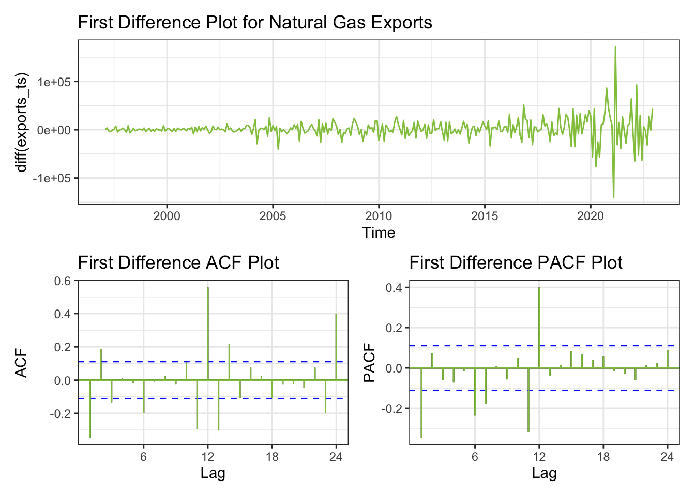
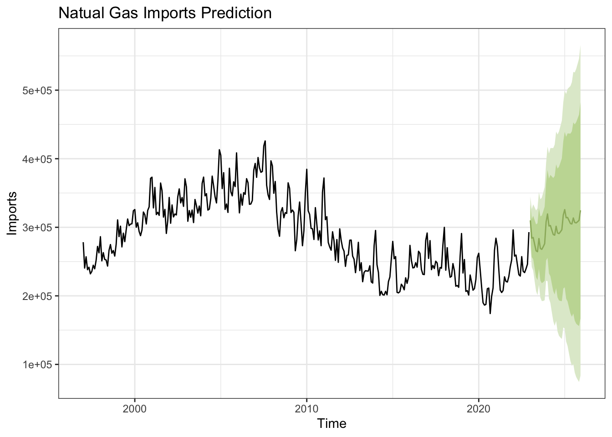

On this page, we’re diving into an in-depth exploration of our time series data. We’ll start by examining its stationarity using ACF graphs and the Augmented Dickey-Fuller Test. If our data isn’t stationary, we’ll apply differencing to correct it. Next, we’ll analyze ACF and PACF plots to pinpoint the optimal parameters for our ARIMA model. Once we’ve built the model, we’ll conduct a comprehensive evaluation of the residuals. Additionally, we’ll compare our model with the results from auto.arima() to see how they stack up. Finally, we’ll forecast future values using our model and assess its accuracy against standard benchmark methods, ensuring our analysis is robust and reliable.
library(tidyverse)library(ggplot2)library(forecast)library(astsa) library(xts)library(tseries)library(fpp2)library(fma)library(lubridate)library(tidyverse)library(TSstudio)library(quantmod)library(tidyquant)library(plotly)library(ggplot2)library(gridExtra)library(tidyverse) library(lubridate) library(fpp2) library(zoo) library(forecast)library(ggplot2)library(patchwork)prices<-read.csv("datasets/eda/Henry_Hub_Natural_Gas_Spot_Price.csv")prices$Date <-as.Date(prices$Month, format ="%m/%d/%y")prices <-subset(prices, select =-Month)names(prices)[1] <-"prices"prices <- prices[c("Date", "prices")]prices_ts =ts(prices$prices, start =2005, end =c(2022,12), frequency =12 )pricesacf <-ggAcf(prices_ts)+ggtitle("ACF Plot for Natural Gas Prices (Henry Hub)") +theme_bw() +geom_segment(lineend ="butt", color ="#92c54b") +geom_hline(yintercept =0, color ="#92c54b")pricespacf <-ggPacf(prices_ts)+ggtitle("PACF Plot for Natural Gas Prices (Henry Hub)") +theme_bw()+geom_segment(lineend ="butt", color ="#92c54b") +geom_hline(yintercept =0, color ="#92c54b")grid.arrange(pricesacf, pricespacf, nrow=2)
ACF Plot has significant lags from 1-24. PACF Plot has significant lags at 1. Since we see autocorrelation in the plots, we can conclude this data is not stationary and will require differencing to make it stationary.
View Code
consumption<-read.csv("datasets/eda/Consumption.csv")# Convert "Month" column to Date typeconsumption$Date <-as.Date(consumption$Month, format ="%Y-%m-%d")consumption_ts =ts(consumption$Consumption, start =2005,end =c(2022,12),frequency =12)consumptionacf <-ggAcf(consumption_ts)+ggtitle("ACF Plot for Natural Gas Consumption ") +theme_bw() +geom_segment(lineend ="butt", color ="#92c54b") +geom_hline(yintercept =0, color ="#92c54b") consumptionpacf <-ggPacf(consumption_ts)+ggtitle("PACF Plot for Natural Gas Consumption ") +theme_bw()+geom_segment(lineend ="butt", color ="#92c54b") +geom_hline(yintercept =0, color ="#92c54b") grid.arrange(consumptionacf, consumptionpacf, nrow=2)
ACF Plot has significant lags at 1, 2. PACF Plot has significant lags at 1 and 2. Since we see autocorrelation in the plots, we can conclude this data is not stationary and will require differencing to make it stationary.
View Code
production<-read.csv("datasets/eda/Production.csv")# Convert "Month" column to Date typeproduction$Date <-as.Date(production$Month, format ="%Y-%m-%d")production_ts =ts(production$Production, start =2005,end =c(2022,12),frequency =12)productionacf <-ggAcf(production_ts,100)+ggtitle("ACF Plot for Natural Gas Production ") +theme_bw() +geom_segment(lineend ="butt", color ="#92c54b") +geom_hline(yintercept =0, color ="#92c54b") productionpacf <-ggPacf(production_ts,100)+ggtitle("PACF Plot for Natural Gas Production ") +theme_bw()+geom_segment(lineend ="butt", color ="#92c54b") +geom_hline(yintercept =0, color ="#92c54b") grid.arrange(productionacf, productionpacf, nrow=2)
ACF Plot has significant lags from 1 to 55. PACF Plot has significant lags at 1 and 2. Since we see autocorrelation in the plots, we can conclude this data is not stationary and will require differencing to make it stationary.
View Code
imports<-read.csv("datasets/eda/Imports.csv")# Convert "Month" column to Date typeimports$Date <-as.Date(imports$Month, format ="%Y-%m-%d")imports_ts =ts(imports$Imports, start =1997,end =c(2022,12),frequency =12)importsacf <-ggAcf(imports_ts,100)+ggtitle("ACF Plot for Natural Gas Imports ") +theme_bw() +geom_segment(lineend ="butt", color ="#92c54b") +geom_hline(yintercept =0, color ="#92c54b") importspacf <-ggPacf(imports_ts,100)+ggtitle("PACF Plot for Natural Gas Imports ") +theme_bw()+geom_segment(lineend ="butt", color ="#92c54b") +geom_hline(yintercept =0, color ="#92c54b") grid.arrange(importsacf, importspacf, nrow=2)
From the visualization above, it looks like there are significant lags at 1-60, with the first lag being the most pronounced. The PACF plot, on the other hand, shows strong correlation at lag 1. Since we see autocorrelation in the plots, we can conclude this data is not stationary and will require differencing to make it stationary.
View Code
exports<-read.csv("datasets/eda/Exports.csv")# Convert "Month" column to Date typeexports$Date <-as.Date(exports$Month, format ="%Y-%m-%d")exports_ts =ts(exports$Exports, start =1997,end =c(2022,12),frequency =12)exportsacf <-ggAcf(exports_ts,100)+ggtitle("ACF Plot for Natural Gas Exports ") +theme_bw() +geom_segment(lineend ="butt", color ="#92c54b") +geom_hline(yintercept =0, color ="#92c54b") exportspacf <-ggPacf(exports_ts,100)+ggtitle("PACF Plot for Natural Gas Exports ") +theme_bw()+geom_segment(lineend ="butt", color ="#92c54b") +geom_hline(yintercept =0, color ="#92c54b") grid.arrange(exportsacf, exportspacf, nrow=2)
From the visualization above, it looks like there are significant lags at 1-60, with the first lag being the most pronounced. The PACF plot, on the other hand, shows strong correlation at lag 1. Since we see autocorrelation in the plots, we can conclude this data is not stationary and will require differencing to make it stationary.
View Code
options("getSymbols.warning4.0"=FALSE)options("getSymbols.yahoo.warning"=FALSE)tickers =c("CVX")for (i in tickers){getSymbols(i,from ="2000-01-02",to ="2022-12-29")}x <-list(title ="date")y <-list(title ="value")cvx_stk <-data.frame(CVX$CVX.Adjusted)cvx_stk <-data.frame(cvx_stk,rownames(cvx_stk))colnames(cvx_stk) <-append(tickers,'Dates')cvx_stk$Dates<-as.Date(cvx_stk$Dates,"%Y-%m-%d")cvx_stk_ts <-ts(cvx_stk$CVX, start =decimal_date(as.Date("2000-01-02")), frequency =365.25)stocksacf <-ggAcf(cvx_stk_ts,100)+ggtitle("ACF Plot for Chevron Corp Stock ") +theme_bw() +geom_segment(lineend ="butt", color ="#92c54b") +geom_hline(yintercept =0, color ="#92c54b") stockspacf <-ggPacf(cvx_stk_ts,100)+ggtitle("PACF Plot for Chevron Corp Stock ") +theme_bw()+geom_segment(lineend ="butt", color ="#92c54b") +geom_hline(yintercept =0, color ="#92c54b") grid.arrange(stocksacf, stockspacf, nrow=2)
From the visualization above, it looks like there are significant lags at 1-100. The PACF plot, on the other hand, shows strong correlation at lag 1. Since we see autocorrelation in the plots, we can conclude this data is not stationary and will require differencing to make it stationary.
View Code
co2_emissions<-read.csv("datasets/eda/co2_emissions.csv")# Convert "Month" column to Date typeco2_emissions$Date <-as.Date(co2_emissions$Date, format ="%Y-%m-%d")co2_ts =ts(co2_emissions$co2_value, start =2000,end =c(2023,11),frequency =12)carbonacf <-ggAcf(co2_ts)+ggtitle("ACF Plot for Natural Gas CO2 emission") +theme_bw() +geom_segment(lineend ="butt", color ="#92c54b") +geom_hline(yintercept =0, color ="#92c54b") carbonpacf <-ggPacf(co2_ts)+ggtitle("PACF Plot for Natural Gas CO2 emission") +theme_bw()+geom_segment(lineend ="butt", color ="#92c54b") +geom_hline(yintercept =0, color ="#92c54b") grid.arrange(carbonacf, carbonpacf, nrow=2)
From the visualization above, a little autocorrelation at lags 13 in the Autocorrelation Function (ACF) plot is seen. In the Partial Autocorrelation Function (PACF) plot, this close relationship shows up at lag 9, 10, 11, 12 and 13. Seeing this kind of pattern, points to the data being stationary and won’t require further differencing.
plot1<-autoplot(diff(prices_ts), main="First Difference Plot for Natural Gas Residential Prices", colour ="#92c54b") +theme_bw()pricesacf <-ggAcf(diff(prices_ts))+ggtitle("First Difference ACF Plot ") +theme_bw() +geom_segment(lineend ="butt", color ="#92c54b") +geom_hline(yintercept =0, color ="#92c54b")pricespacf <-ggPacf(diff(prices_ts))+ggtitle("First Difference PACF Plot ") +theme_bw()+geom_segment(lineend ="butt", color ="#92c54b") +geom_hline(yintercept =0, color ="#92c54b")# Combine the plotscombined_plot <- plot1 / (pricesacf | pricespacf)# Print the combined plotprint(combined_plot)
After performing First Order Differencing, we can see no significant correlation in the ACF and PACF plots, which makes the data stationary. However, we can see over differencing here.
Here the parameters are d = 0,1 p = 1-4 (PACF Plot) q = 1-4 (ACF Plot)
View Code
plot1<-autoplot(diff(consumption_ts), main="First Difference Plot for Natural Gas Consumption", colour ="#92c54b") +theme_bw()consumptionacf <-ggAcf(diff(consumption_ts))+ggtitle("First Difference ACF Plot ") +theme_bw() +geom_segment(lineend ="butt", color ="#92c54b") +geom_hline(yintercept =0, color ="#92c54b")consumptionpacf <-ggPacf(diff(consumption_ts))+ggtitle("First Difference PACF Plot ") +theme_bw()+geom_segment(lineend ="butt", color ="#92c54b") +geom_hline(yintercept =0, color ="#92c54b")# Combine the plotscombined_plot <- plot1 / (consumptionacf | consumptionpacf)# Print the combined plotprint(combined_plot)
After performing First Order Differencing, we can see no significant correlation in the ACF and PACF plots, which makes the data stationary.
Here the parameters are d = 0,1 p = 1,2,3 (PACF Plot) q = 1 (ACF Plot)
View Code
plot1<-autoplot(diff(production_ts), main="First Difference Plot for Natural Gas Production", colour ="#92c54b") +theme_bw()productionacf <-ggAcf(diff(production_ts))+ggtitle("First Difference ACF Plot ") +theme_bw() +geom_segment(lineend ="butt", color ="#92c54b") +geom_hline(yintercept =0, color ="#92c54b")productionpacf <-ggPacf(diff(production_ts))+ggtitle("First Difference PACF Plot ") +theme_bw()+geom_segment(lineend ="butt", color ="#92c54b") +geom_hline(yintercept =0, color ="#92c54b")# Combine the plotscombined_plot <- plot1 / (productionacf | productionpacf)# Print the combined plotprint(combined_plot)
After performing First Order Differencing, we can see no significant correlation in the ACF and PACF plots, which makes the data stationary.
Here the parameters are d = 0,1 p = 1,2,3,4 (PACF Plot) q = 1 (ACF Plot)
View Code
plot1<-autoplot(diff(imports_ts), main="First Difference Plot for Natural Gas Imports", colour ="#92c54b") +theme_bw()importsacf <-ggAcf(diff(imports_ts))+ggtitle("First Difference ACF Plot ") +theme_bw() +geom_segment(lineend ="butt", color ="#92c54b") +geom_hline(yintercept =0, color ="#92c54b")importspacf <-ggPacf(diff(imports_ts))+ggtitle("First Difference PACF Plot ") +theme_bw()+geom_segment(lineend ="butt", color ="#92c54b") +geom_hline(yintercept =0, color ="#92c54b")# Combine the plotscombined_plot <- plot1 / (importsacf | importspacf)# Print the combined plotprint(combined_plot)
After performing First Order Differencing, we can see no significant correlation in the ACF and PACF plots, which makes the data stationary.
Here the parameters are d = 0,1 p = 1,2 (PACF Plot) q = 1 (ACF Plot)
View Code
plot1<-autoplot(diff(exports_ts), main="First Difference Plot for Natural Gas Exports", colour ="#92c54b") +theme_bw()exportsacf <-ggAcf(diff(exports_ts))+ggtitle("First Difference ACF Plot ") +theme_bw() +geom_segment(lineend ="butt", color ="#92c54b") +geom_hline(yintercept =0, color ="#92c54b")exportspacf <-ggPacf(diff(exports_ts))+ggtitle("First Difference PACF Plot ") +theme_bw()+geom_segment(lineend ="butt", color ="#92c54b") +geom_hline(yintercept =0, color ="#92c54b")# Combine the plotscombined_plot <- plot1 / (exportsacf | exportspacf)# Print the combined plotprint(combined_plot)

After performing First Order Differencing, we can see no significant correlation in the ACF and PACF plots, which makes the data stationary.
Here the parameters are d = 0,1 p = 1 (PACF Plot) q = 1,2 (ACF Plot)
View Code
plot1<-autoplot(diff(cvx_stk_ts), main="First Difference Plot for Chevron Corp Stocks", colour ="#92c54b") +theme_bw()stocksacf <-ggAcf(diff(cvx_stk_ts),24)+ggtitle("First Difference ACF Plot ") +theme_bw() +geom_segment(lineend ="butt", color ="#92c54b") +geom_hline(yintercept =0, color ="#92c54b")stockspacf <-ggPacf(diff(cvx_stk_ts),24)+ggtitle("First Difference PACF Plot ") +theme_bw()+geom_segment(lineend ="butt", color ="#92c54b") +geom_hline(yintercept =0, color ="#92c54b")# Combine the plotscombined_plot <- plot1 / (stocksacf | stockspacf)# Print the combined plotprint(combined_plot)
After performing First Order Differencing, we can see no significant correlation in the ACF and PACF plots, which makes the data stationary.
Here the parameters are d = 0,1 p = 1,2 (PACF Plot) q = 1,2 (ACF Plot)
Augmented Dickey-Fuller Test
data: diff(prices_ts)
Dickey-Fuller = -6.7747, Lag order = 5, p-value = 0.01
alternative hypothesis: stationary
View Code
adf.test(diff(consumption_ts))
Augmented Dickey-Fuller Test
data: diff(consumption_ts)
Dickey-Fuller = -7.984, Lag order = 5, p-value = 0.01
alternative hypothesis: stationary
View Code
adf.test(diff(production_ts))
Augmented Dickey-Fuller Test
data: diff(production_ts)
Dickey-Fuller = -7.9263, Lag order = 5, p-value = 0.01
alternative hypothesis: stationary
View Code
adf.test(diff(imports_ts))
Augmented Dickey-Fuller Test
data: diff(imports_ts)
Dickey-Fuller = -8.4953, Lag order = 6, p-value = 0.01
alternative hypothesis: stationary
View Code
adf.test(diff(exports_ts))
Augmented Dickey-Fuller Test
data: diff(exports_ts)
Dickey-Fuller = -10.846, Lag order = 6, p-value = 0.01
alternative hypothesis: stationary
View Code
adf.test(diff(cvx_stk_ts))
Augmented Dickey-Fuller Test
data: diff(cvx_stk_ts)
Dickey-Fuller = -18.023, Lag order = 17, p-value = 0.01
alternative hypothesis: stationary
View Code
adf.test(co2_ts)
Augmented Dickey-Fuller Test
data: co2_ts
Dickey-Fuller = -10.018, Lag order = 6, p-value = 0.01
alternative hypothesis: stationary
The ADF test shows that the p-value less than 0.05, therefore we can conclude that all the data used for this analysis is stationary. And it also validates all the observations above.
The superior performance of the ARIMA(1,1,1)(2,0,0)[12] model with drift as compared to the ARIMA(4,0,4) and ARIMA(2,1,2) model could be due to the former’s ability to more effectively capture the seasonality within the dataset. While the ARIMA(4,0,4) and ARIMA(2,1,2) model were decent, it may have not fully addressed the non-stationarity. The dataset likely exhibits strong seasonal patterns that a simple ARIMA model cannot adequately model, hence the need for a SARIMA (Seasonal ARIMA) approach. The SARIMA model includes seasonal differencing, which helps in managing seasonal structures that ARIMA models do not account for.
The superior performance of the ARIMA(2,0,3)(2,1,2)[12] model with drift as compared to the ARIMA(3,1,1) model could be due to the former’s ability to more effectively capture the seasonality within the dataset. While the ARIMA(3,1,1) model was decent, it may have not fully addressed the non-stationarity. The dataset likely exhibits strong seasonal patterns that a simple ARIMA model cannot adequately model, hence the need for a SARIMA (Seasonal ARIMA) approach. The SARIMA model includes seasonal differencing, which helps in managing seasonal structures that ARIMA models do not account for.
The superior performance of the ARIMA(0,1,1)(1,1,1)[12] model with drift as compared to the ARIMA(4,1,1) model could be due to the former’s ability to more effectively capture the seasonality within the dataset. While the ARIMA(4,1,1) model was decent, it may have not fully addressed the non-stationarity. The dataset likely exhibits strong seasonal patterns that a simple ARIMA model cannot adequately model, hence the need for a SARIMA (Seasonal ARIMA) approach. The SARIMA model includes seasonal differencing, which helps in managing seasonal structures that ARIMA models do not account for.
The superior performance of the ARIMA(0,1,3)(1,1,1)[12] model with drift as compared to the ARIMA(1,1,1) model could be due to the former’s ability to more effectively capture the seasonality within the dataset. While the ARIMA(1,1,1) model was decent, it may have not fully addressed the non-stationarity. The dataset likely exhibits strong seasonal patterns that a simple ARIMA model cannot adequately model, hence the need for a SARIMA (Seasonal ARIMA) approach. The SARIMA model includes seasonal differencing, which helps in managing seasonal structures that ARIMA models do not account for.
The superior performance of the ARIMA(0,1,1)(1,0,0)[12] model with drift as compared to the ARIMA(1,1,1) model could be due to the former’s ability to more effectively capture the seasonality within the dataset. While the ARIMA(1,1,1) model was decent, it may have not fully addressed the non-stationarity. The dataset likely exhibits strong seasonal patterns that a simple ARIMA model cannot adequately model, hence the need for a SARIMA (Seasonal ARIMA) approach. The SARIMA model includes seasonal differencing, which helps in managing seasonal structures that ARIMA models do not account for.
The best model from the step above was ARIMA(1,1,1), while the best model Auto ARIMA gave me is ARIMA(0,1,2). We see that model from the step above has lower AIC, BIC and AICc than auto ARIMA model. Therefore, we’ll do further analysis to choose the best model.
The best model from the step above was ARIMA(3,0,7), while the best model Auto ARIMA gave me is ARIMA(5,0,1). We see that model from the step above has lower AIC, BIC and AICc than auto ARIMA model. Therefore, we’ll do further analysis to choose the best model.
Series: imports_ts
ARIMA(1,1,1) with drift
Coefficients:
ar1 ma1 drift
0.4842 -0.8693 -9.8334
s.e. 0.0648 0.0312 336.6107
sigma^2 = 533347952: log likelihood = -3564.8
AIC=7137.6 AICc=7137.73 BIC=7152.56
Training set error measures:
ME RMSE MAE MPE MAPE MASE
Training set -91.77133 22945.81 18085.21 -0.6031078 6.369912 0.8085767
ACF1
Training set 0.03378889
The best model from the steps above was ARIMA(1,1,1)
Series: exports_ts
ARIMA(1,1,1) with drift
Coefficients:
ar1 ma1 drift
-0.5499 0.2305 1853.9829
s.e. 0.1236 0.1427 942.7753
sigma^2 = 442299121: log likelihood = -3535.47
AIC=7078.94 AICc=7079.07 BIC=7093.9
Training set error measures:
ME RMSE MAE MPE MAPE MASE
Training set -1.271411 20895.66 12323.27 -4.178759 11.35464 0.4469031
ACF1
Training set -0.001459686
The best model from the steps above were ARIMA(1,1,1) and ARIMA(0,1,2)
Series: cvx_stk_ts
ARIMA(1,1,1) with drift
Coefficients:
ar1 ma1 drift
-0.5021 0.4579 0.0264
s.e. 0.1233 0.1264 0.0147
sigma^2 = 1.325: log likelihood = -9019.58
AIC=18047.16 AICc=18047.17 BIC=18073.81
Training set error measures:
ME RMSE MAE MPE MAPE MASE
Training set -0.0002444368 1.150707 0.6858501 -0.04429528 1.190633 0.05192604
ACF1
Training set 0.004498203
Series: cvx_stk_ts
ARIMA(0,1,2) with drift
Coefficients:
ma1 ma2 drift
-0.0394 0.0292 0.0262
s.e. 0.0132 0.0129 0.0150
sigma^2 = 1.325: log likelihood = -9019.92
AIC=18047.84 AICc=18047.84 BIC=18074.49
Training set error measures:
ME RMSE MAE MPE MAPE MASE
Training set 1.805754e-05 1.150774 0.6860782 -0.04283954 1.19083 0.05194331
ACF1
Training set -0.0003619028
The best model from the steps above were ARIMA(3,0,7) and ARIMA(5,0,1)
The standard residual plot for both the models looks promising, indicating a relatively stable mean and variance, although there are noticeable spikes. The ACF plot for model 1 reveals no correlation, suggesting that the model 1 has captured all the dependencies in the data, leaving no degree of correlation unexplained. The Q-Q plot for both the models suggests that the residuals are approximately normally distributed. However, the Ljung-Box test produces most of the values under the 0.05 significance level for both the models, implying the presence of significant correlations within the residuals. This indicates that a SARIMA model, which can better account for seasonality, may provide a more accurate fit for the data. However, the AIC and AICc values for model 1 i.e. ARIMA(4,0,4) is better than model 2 i.e. ARIMA(2,1,2). Hence, ARIMA(4,0,4) is the best model.
The standard residual plot looks promising, indicating a relatively stable mean and variance, although there are noticeable spikes. The ACF plot reveals minimal correlation, suggesting that the current model has not captured all the dependencies in the data, leaving some degree of correlation unexplained. The Q-Q plot suggests that the residuals are approximately normally distributed. However, the Ljung-Box test produces values under the 0.05 significance level, implying the presence of significant correlations within the residuals. This indicates that a SARIMA model, which can better account for seasonality, may provide a more accurate fit for the data.
The standard residual plot looks promising, indicating a relatively stable mean and variance, although there are noticeable spikes. The ACF plot reveals minimal correlation, suggesting that the current model has not captured all the dependencies in the data, leaving some degree of correlation unexplained. The Q-Q plot suggests that the residuals are approximately normally distributed. However, the Ljung-Box test produces most of the values under the 0.05 significance level, implying the presence of significant correlations within the residuals. This indicates that a SARIMA model, which can better account for seasonality, may provide a more accurate fit for the data.
converged
<><><><><><><><><><><><><><>
Coefficients:
Estimate SE t.value p.value
ar1 0.4842 0.0648 7.4731 0.0000
ma1 -0.8693 0.0312 -27.8550 0.0000
constant -9.8334 336.6107 -0.0292 0.9767
sigma^2 estimated as 528202867 on 308 degrees of freedom
AIC = 22.95047 AICc = 22.95072 BIC = 22.99857
The standard residual plot looks promising, indicating a relatively stable mean and variance, although there are noticeable spikes. The ACF plot reveals minimal correlation, suggesting that the current model has not captured all the dependencies in the data, leaving some degree of correlation unexplained. The Q-Q plot suggests that the residuals are approximately normally distributed. However, the Ljung-Box test produces values under the 0.05 significance level, implying the presence of significant correlations within the residuals. This indicates that a SARIMA model, which can better account for seasonality, may provide a more accurate fit for the data.
converged
<><><><><><><><><><><><><><>
Coefficients:
Estimate SE t.value p.value
ar1 -0.5499 0.1236 -4.4483 0.0000
ma1 0.2305 0.1427 1.6150 0.1073
constant 1853.9829 942.7753 1.9665 0.0501
sigma^2 estimated as 438032570 on 308 degrees of freedom
AIC = 22.76187 AICc = 22.76212 BIC = 22.80997
The standard residual plot looks promising, indicating a relatively stable mean and variance, although there are noticeable spikes. The ACF plot reveals minimal correlation, suggesting that the current model has not captured all the dependencies in the data, leaving some degree of correlation unexplained. The Q-Q plot suggests that the residuals are approximately normally distributed. However, the Ljung-Box test produces most of the values under the 0.05 significance level, implying the presence of significant correlations within the residuals. This indicates that a SARIMA model, which can better account for seasonality, may provide a more accurate fit for the data.
Coefficients:
Estimate SE t.value p.value
ma1 -0.0394 0.0132 -2.9991 0.0027
ma2 0.0292 0.0129 2.2615 0.0238
constant 0.0262 0.0150 1.7468 0.0807
sigma^2 estimated as 1.32451 on 5781 degrees of freedom
AIC = 3.120303 AICc = 3.120304 BIC = 3.124911
For both the models, the Standard Residual Plot looks promising, indicating stationarity with consistent mean and variance across the series. The Autocorrelation Function (ACF) plot presents minimal correlation, suggesting the model has captured the majority of the information in the data, leaving behind what appears to be merely white noise. This is a sign of an appropriate model fit. The Quantile-Quantile (Q-Q) Plot approximates normal distribution, reinforcing the model’s adequacy. Lastly, the Ljung-Box test yields some values exceeding the 0.05 significance level, implying that any remaining correlations in the residuals are not statistically significant, which further supports the model’s suitability. However, the AIC, BIC and AICc values for model 1 i.e. ARIMA(1,1,1) is better than model 2 i.e. ARIMA(0,1,2). Hence, ARIMA(1,1,1) is the best model.
For both the models, the Standard Residual Plot looks promising, indicating stationarity with consistent mean and variance across the series. The Autocorrelation Function (ACF) plot presents minimal correlation, suggesting the model has captured the majority of the information in the data, leaving behind what appears to be merely white noise. This is a sign of an appropriate model fit. The Quantile-Quantile (Q-Q) Plot approximates near-normal distribution, reinforcing the model’s adequacy. Lastly, the Ljung-Box test yields some values exceeding the 0.05 significance level for model2, implying that any remaining correlations in the residuals are not statistically significant, which further supports the model’s suitability. However, the AIC, BIC and AICc values for model 1 i.e. ARIMA(3,0,7) is better than model 2 i.e. ARIMA(5,0,1). Hence, ARIMA(3,0,7) is the best model.
Final Model Fitting
Here I’ll fit the best model obtained from the above analysis
Series: imports_ts
ARIMA(1,1,1)
Coefficients:
ar1 ma1
0.4841 -0.8693
s.e. 0.0648 0.0312
sigma^2 = 531623633: log likelihood = -3564.8
AIC=7135.6 AICc=7135.68 BIC=7146.82
Training set error measures:
ME RMSE MAE MPE MAPE MASE
Training set -129.5084 22945.85 18087.87 -0.6167255 6.371787 0.8086957
ACF1
Training set 0.03376946
Series: exports_ts
ARIMA(1,1,1)
Coefficients:
ar1 ma1
-0.5604 0.2505
s.e. 0.1204 0.1387
sigma^2 = 446310196: log likelihood = -3537.38
AIC=7080.75 AICc=7080.83 BIC=7091.97
Training set error measures:
ME RMSE MAE MPE MAPE MASE
Training set 2304.257 21024.24 12413.88 0.3732122 10.45859 0.4501893
ACF1
Training set -0.01084399
Series: cvx_stk_ts
ARIMA(1,1,1)
Coefficients:
ar1 ma1
-0.5014 0.4575
s.e. 0.1239 0.1269
sigma^2 = 1.326: log likelihood = -9021.17
AIC=18048.33 AICc=18048.34 BIC=18068.32
Training set error measures:
ME RMSE MAE MPE MAPE MASE
Training set 0.0269576 1.151023 0.6867105 0.02465471 1.191267 0.05199118
ACF1
Training set 0.004223936
The forecasted trend decline downwards. The prediction interval widens as time progresses, which is typical in time series forecasts as uncertainty increases with longer forecast horizons. The model seems to expect the continuation of the cyclical behavior, but with an downward trend in the mean of the series. However, the forecast does not show any sharp increases or decreases, indicating that the model does not anticipate any abrupt changes in the pattern of prices.
The forecast plot illustrates an initial rise in natural gas consumption, which swiftly dips and then climbs once more. While the model captures the cyclical nature of the demand, it seems to underestimate the magnitude of these seasonal swings. The anticipated peaks in consumption are comparable to or exceed previous levels, indicating the model’s limited ability to fully account for the strength of these seasonal variations.
The forecast suggests a continued upward trend in production, consistent with the observed increase over the historical period. This aligns with the “with drift” aspect of the model, which typically represents a steady average change over time, rather than a static mean level. The anticipated peaks in production are comparable to or exceed previous levels, indicating the model’s limited ability to fully account for the strength of these seasonal variations.
The forecast plot predicts a falling trajectory in import data over the forthcoming fifteen-year span. The shaded bands delineate the 95% confidence interval, encapsulating the range within which future data points are expected to fall with a high degree of certainty. However, the forecasted line seems overly smooth, lacking any evident fluctuations. This suggests that the model may not adequately account for potential variability and could be oversimplifying the complex nature of the underlying processes influencing imports.
The forecast plot predicts a rising trajectory in export data over the forthcoming fifteen-year span. The shaded bands delineate the 95% confidence interval, encapsulating the range within which future data points are expected to fall with a high degree of certainty. However, the forecasted line seems overly smooth, lacking any evident fluctuations. This suggests that the model may not adequately account for potential variability and could be oversimplifying the complex nature of the underlying processes influencing imports.
The forecast plot predicts a rising trajectory in CVX Stocks data over the forthcoming fifteen-year span. The shaded bands delineate the 95% confidence interval, encapsulating the range within which future data points are expected to fall with a high degree of certainty. However, the forecasted line seems overly smooth, lacking any evident fluctuations. This suggests that the model may not adequately account for potential variability and could be oversimplifying the complex nature of the underlying processes influencing imports.
The forecast plot projects an ongoing pattern consistent with the historical seasonal trend in CO2 emissions data. While the model replicates the seasonal nature of the post-2020 data, the predicted variations seem to be of a lesser magnitude. Hence, the model appears to underrepresent the full intensity of the seasonal fluctuations observed in the emissions data.
ARIMA vs. benchmark methods.
This section plots and compares the performance of ARIMA model with the benchmark methods
From the plot it is seen that the ARIMA model forecast outperforms other benchmark methods.
From the accuracy metrics, it is seen that the ARIMA model has the least RMSE and MAE values. This indicates that the ARIMA model outperforms the benchmark models and validates the above findings from the plot.
View Code
autoplot(consumption_ts) +autolayer(meanf(consumption_ts, h=15),series="Mean", PI=FALSE) +autolayer(naive(consumption_ts, h=15),series="Naïve", PI=FALSE)+autolayer(rwf(consumption_ts, drift=TRUE, h=15),series="Drift", PI=FALSE)+autolayer(pred_consumption_ts, series="ARIMA",PI=FALSE) +ggtitle("Natural Gas Consumption ARIMA vs. Benchmarks")+guides(colour=guide_legend(title="Forecast")) +theme_bw() +theme_bw()
Comparing Accuracy Metrics
View Code
output1 <-accuracy(pred_consumption_ts)output2 <-accuracy(meanf(consumption_ts, h=15))output3 <-accuracy(naive(consumption_ts, h=15))output4 <-accuracy(rwf(consumption_ts, drift=TRUE, h=15))output_list <-list(output1, output2, output3, output4)# Put into dfoutput_df <-do.call(rbind, output_list)# Set row names for the dataframerow.names(output_df) <-c("ARIMA", "Meanf", "Naive", "Drift")output_df
From the plot it is seen that the ARIMA model forecast outperforms other benchmark methods.
From the accuracy metrics, it is seen that the ARIMA model has the least RMSE and MAE values. This indicates that the ARIMA model outperforms the benchmark models and validates the above findings from the plot.
View Code
autoplot(production_ts) +autolayer(meanf(production_ts, h=15),series="Mean", PI=FALSE) +autolayer(naive(production_ts, h=15),series="Naïve", PI=FALSE)+autolayer(rwf(production_ts, drift=TRUE, h=15),series="Drift", PI=FALSE)+autolayer(pred_production_ts, series="ARIMA",PI=FALSE) +ggtitle("Natural Gas Production ARIMA vs. Benchmarks")+guides(colour=guide_legend(title="Forecast")) +theme_bw() +theme_bw()
Comparing Accuracy Metrics
View Code
output1 <-accuracy(pred_production_ts)output2 <-accuracy(meanf(production_ts, h=15))output3 <-accuracy(naive(production_ts, h=15))output4 <-accuracy(rwf(production_ts, drift=TRUE, h=15))output_list <-list(output1, output2, output3, output4)# Put into dfoutput_df <-do.call(rbind, output_list)# Set row names for the dataframerow.names(output_df) <-c("ARIMA", "Meanf", "Naive", "Drift")output_df
From the plot it is seen that the ARIMA model forecast outperforms other benchmark methods.
From the accuracy metrics, it is seen that the ARIMA model has the least RMSE, ME and MAE values. This indicates that the ARIMA model outperforms the benchmark models and validates the above findings from the plot.
View Code
autoplot(imports_ts) +autolayer(meanf(imports_ts, h=15),series="Mean", PI=FALSE) +autolayer(naive(imports_ts, h=15),series="Naïve", PI=FALSE)+autolayer(rwf(imports_ts, drift=TRUE, h=15),series="Drift", PI=FALSE)+autolayer(pred_imports_ts, series="ARIMA",PI=FALSE) +ggtitle("Natural Gas Imports ARIMA vs. Benchmarks")+guides(colour=guide_legend(title="Forecast")) +theme_bw() +theme_bw()
Comparing Accuracy Metrics
View Code
output1 <-accuracy(pred_imports_ts)output2 <-accuracy(meanf(imports_ts, h=15))output3 <-accuracy(naive(imports_ts, h=15))output4 <-accuracy(rwf(imports_ts, drift=TRUE, h=15))output_list <-list(output1, output2, output3, output4)# Put into dfoutput_df <-do.call(rbind, output_list)# Set row names for the dataframerow.names(output_df) <-c("ARIMA", "Meanf", "Naive", "Drift")output_df
From the plot it is seen that the ARIMA model forecast outperforms other benchmark methods.
From the accuracy metrics, it is seen that the ARIMA model has the least RMSE, ME and MAE values. This indicates that the ARIMA model outperforms the benchmark models and validates the above findings from the plot.
View Code
autoplot(exports_ts) +autolayer(meanf(exports_ts, h=15),series="Mean", PI=FALSE) +autolayer(naive(exports_ts, h=15),series="Naïve", PI=FALSE)+autolayer(rwf(exports_ts, drift=TRUE, h=15),series="Drift", PI=FALSE)+autolayer(pred_exports_ts, series="ARIMA",PI=FALSE) +ggtitle("Natural Gas Exports ARIMA vs. Benchmarks")+guides(colour=guide_legend(title="Forecast")) +theme_bw() +theme_bw()
Comparing Accuracy Metrics
View Code
output1 <-accuracy(pred_exports_ts)output2 <-accuracy(meanf(exports_ts, h=15))output3 <-accuracy(naive(exports_ts, h=15))output4 <-accuracy(rwf(exports_ts, drift=TRUE, h=15))output_list <-list(output1, output2, output3, output4)# Put into dfoutput_df <-do.call(rbind, output_list)# Set row names for the dataframerow.names(output_df) <-c("ARIMA", "Meanf", "Naive", "Drift")output_df
From the plot it is seen that the ARIMA model forecast and Drift benchmark model have similar trajectories for the forecast and follow the trend the best outperforming other benchmark methods.
From the accuracy metrics, it is seen that the ARIMA model has the least RMSE, ME and MAE values followed by Drift method. This indicates that the ARIMA model outperforms the benchmark models and validates the above findings from the plot.
From the plot it is seen that the ARIMA model forecast outperforms other benchmark methods.
From the accuracy metrics, it is seen that the ARIMA model has the least RMSE and MAE values. This indicates that the ARIMA model outperforms the benchmark models and validates the above findings from the plot.
View Code
autoplot(co2_ts) +autolayer(meanf(co2_ts, h=15),series="Mean", PI=FALSE) +autolayer(naive(co2_ts, h=15),series="Naïve", PI=FALSE)+autolayer(rwf(co2_ts, drift=TRUE, h=15),series="Drift", PI=FALSE)+autolayer(pred_co2_ts, series="ARIMA",PI=FALSE) +ggtitle("CO2 Emissions from Natural Gas ARIMA vs. Benchmarks")+guides(colour=guide_legend(title="Forecast")) +theme_bw() +theme_bw()
Comparing Accuracy Metrics
View Code
output1 <-accuracy(pred_co2_ts)output2 <-accuracy(meanf(co2_ts, h=15))output3 <-accuracy(naive(co2_ts, h=15))output4 <-accuracy(rwf(co2_ts, drift=TRUE, h=15))output_list <-list(output1, output2, output3, output4)# Put into dfoutput_df <-do.call(rbind, output_list)# Set row names for the dataframerow.names(output_df) <-c("ARIMA", "Meanf", "Naive", "Drift")output_df
From the plot it is seen that the ARIMA model forecast outperforms other benchmark methods.
From the accuracy metrics, it is seen that the ARIMA model has the least RMSE and MAE values. This indicates that the ARIMA model outperforms the benchmark models and validates the above findings from the plot.
SARIMA Modeling
The analysis reveals clear seasonality in some of my datasets- Prices, Consumption, Production, Imports, Exports,and Industry Employment. Simple first, second, or third order differencing hasn’t adequately addressed the seasonal patterns observed in these datasets. Therefore, seasonal differencing is necessary, indicating that a SARIMA model is better suited for these types of data.
prices_diff<-prices_ts %>%diff(lag =12)plot1<-autoplot(prices_diff, main="First Difference Seasonal Plot for Natural Gas Residential Prices", colour ="#92c54b") +theme_bw()pricesacf <-ggAcf(prices_diff)+ggtitle("First Difference Seasonal ACF Plot ") +theme_bw() +geom_segment(lineend ="butt", color ="#92c54b") +geom_hline(yintercept =0, color ="#92c54b")pricespacf <-ggPacf(prices_diff)+ggtitle("First Difference Seasonal PACF Plot ") +theme_bw()+geom_segment(lineend ="butt", color ="#92c54b") +geom_hline(yintercept =0, color ="#92c54b")# Combine the plotscombined_plot <- plot1 / (pricesacf | pricespacf)# Print the combined plotprint(combined_plot)
When we apply seasonal differencing to the original dataset, a correlation still remains, yet it’s less pronounced than what was seen with first-order differencing. This observation leads to the possibility of setting the seasonal differencing parameter (D) to 1 and keeping the non-seasonal differencing parameter (d) at 0. Moving forward with performing both seasonal differencing and first-order differencing on the raw monthly data might result in over-differencing, which we want to avoid. Therefore, the appropriate P, D, Q, and d values for our SARIMA model would be determined as follows.
P: 1 Q:1,2,3,4 D: 1 d: 0
View Code
consumption_diff<-consumption_ts %>%diff(lag =12)plot1<-autoplot(consumption_diff, main="First Difference Seasonal Plot for Natural Gas Consumption", colour ="#92c54b") +theme_bw()consumptionacf <-ggAcf(consumption_diff)+ggtitle("First Difference Seasonal ACF Plot ") +theme_bw() +geom_segment(lineend ="butt", color ="#92c54b") +geom_hline(yintercept =0, color ="#92c54b")consumptionpacf <-ggPacf(consumption_diff)+ggtitle("First Difference Seasonal PACF Plot ") +theme_bw()+geom_segment(lineend ="butt", color ="#92c54b") +geom_hline(yintercept =0, color ="#92c54b")# Combine the plotscombined_plot <- plot1 / (consumptionacf | consumptionpacf)# Print the combined plotprint(combined_plot)
When we apply seasonal differencing to the original dataset, correlation is less pronounced than what was seen with first-order differencing. This observation leads to the possibility of setting the seasonal differencing parameter (D) to 1 and keeping the non-seasonal differencing parameter (d) at 0. Moving forward with performing both seasonal differencing and first-order differencing on the raw monthly data might result in over-differencing, which we want to avoid. Therefore, the appropriate P, D, Q, and d values for our SARIMA model would be determined as follows.
P: 1 Q: 1,2,3,4 D:1 d:0
View Code
production_diff<-production_ts %>%diff(lag =12)%>% diffplot1<-autoplot(production_diff, main="Seasonal Plot for Natural Gas Production", colour ="#92c54b") +theme_bw()productionacf <-ggAcf(production_diff)+ggtitle("Seasonal ACF Plot ") +theme_bw() +geom_segment(lineend ="butt", color ="#92c54b") +geom_hline(yintercept =0, color ="#92c54b")productionpacf <-ggPacf(production_diff)+ggtitle("Seasonal PACF Plot ") +theme_bw()+geom_segment(lineend ="butt", color ="#92c54b") +geom_hline(yintercept =0, color ="#92c54b")# Combine the plotscombined_plot <- plot1 / (productionacf | productionpacf)# Print the combined plotprint(combined_plot)
When we apply seasonal differencing to the original dataset, a correlation still remains, yet it’s less pronounced than what was seen with first-order differencing. This observation leads to the possibility of setting the seasonal differencing parameter (D) to 1 and keeping the non-seasonal differencing parameter (d) at 0. Moving forward with performing both seasonal differencing and first-order differencing on the raw monthly data results in least correlation. Therefore, the appropriate P, D, Q, and d values for our SARIMA model would be determined as follows.
P: 1 Q: 1 D:1 d:1
View Code
imports_diff<-imports_ts %>%diff(lag =12)%>% diffplot1<-autoplot(imports_diff, main="Seasonal Plot for Natural Gas Imports", colour ="#92c54b") +theme_bw()importsacf <-ggAcf(imports_diff)+ggtitle("Seasonal ACF Plot ") +theme_bw() +geom_segment(lineend ="butt", color ="#92c54b") +geom_hline(yintercept =0, color ="#92c54b")importspacf <-ggPacf(imports_diff)+ggtitle("Seasonal PACF Plot ") +theme_bw()+geom_segment(lineend ="butt", color ="#92c54b") +geom_hline(yintercept =0, color ="#92c54b")# Combine the plotscombined_plot <- plot1 / (importsacf | importspacf)# Print the combined plotprint(combined_plot)
When we apply seasonal differencing to the original dataset, a correlation still remains, yet it’s less pronounced than what was seen with first-order differencing. This observation leads to the possibility of setting the seasonal differencing parameter (D) to 1 and keeping the non-seasonal differencing parameter (d) at 0. Moving forward with performing both seasonal differencing and first-order differencing on the raw monthly data results in least correlation. Therefore, the appropriate P, D, Q, and d values for our SARIMA model would be determined as follows.
P: 1 Q: 1 D:1 d:1
View Code
# exports_diff<-exports_ts %>% diff(lag = 12)%>% diffexports_diff <- exports_ts %>%diff(lag =1) %>%# First differencena.omit() # Remove NAs that result from differencingplot1<-autoplot(exports_diff, main="Seasonal Plot for Natural Gas Exports", colour ="#92c54b") +theme_bw()exportsacf <-ggAcf(exports_diff, lag.max =12)+ggtitle("Seasonal ACF Plot ") +theme_bw() +geom_segment(lineend ="butt", color ="#92c54b") +geom_hline(yintercept =0, color ="#92c54b")exportspacf <-ggPacf(exports_diff, lag.max =12)+ggtitle("Seasonal PACF Plot ") +theme_bw()+geom_segment(lineend ="butt", color ="#92c54b") +geom_hline(yintercept =0, color ="#92c54b")# Combine the plotscombined_plot <- plot1 / (exportsacf | exportspacf)# Print the combined plotprint(combined_plot)
When we apply non-seasonal first differencing to the original dataset, the correlation is less pronounced. This observation leads to the possibility of setting the seasonal differencing parameter (D) to 0 and keeping the non-seasonal differencing parameter (d) at 1. Moving forward with performing both seasonal differencing and first-order differencing on the raw monthly data might result in over-differencing, which we want to avoid. Therefore, the appropriate P, D, Q, and d values for our SARIMA model would be determined as follows.
P: 1 Q: 1,2 D: 0 d:1
Model Selection & Fitting
In this section, we’ll use insights from the ACF and PACF plots, alongside the differencing steps we’ve executed, to fit SARIMA(p,d,q)(P,D,Q) models manually by exploring various combinations of the parameters p, d, q and P, D, Q. And get the best models resulted from manual fitting and from Auto.ARIMA().
Best Model 1: ARIMA(0,1,1)x(0,0,1)[12] Best Model 2 (from Auto ARIMA): ARIMA(0,1,1)(1,0,0)[12]
Model Diagnostics
In this part, we’re going to fit all the best model obtained from our earlier analysis, and then dive into some model diagnostics to see how each one of them is performing.
The ACF plot reveals that most autocorrelation values are indeed within the confidence interval, indicating a good fit for both the models. The Q-Q plot suggest that the residuals are normally distributed for both the models.From the Ljung-Box Test, the p-values for model1 are typically below 0.05 suggesting that the residuals are not random, which is not desirable in a good model fit while for model2 are typically above 0.05 suggesting that the residuals are random, which is desirable in a good model fit. On comparing AIC, AICc, and BIC, model 2 has lower values indicating a better fit.
The ACF plot reveals that most autocorrelation values are indeed within the confidence interval, indicating a good fit for all the models. The Q-Q plot suggest that the residuals are normally distributed for all the models.From the Ljung-Box Test, the p-values for all the models are typically below 0.05 suggesting that the residuals are not random, which may not be desirable in a good model fit. On comparing AIC, AICc, and BIC, model 3 has lower values indicating a better fit.
converged
<><><><><><><><><><><><><><>
Coefficients:
Estimate SE t.value p.value
ma1 -0.2318 0.0806 -2.8754 0.0045
sar1 -0.1148 0.0976 -1.1759 0.2410
sma1 -0.6329 0.0785 -8.0600 0.0000
sigma^2 estimated as 2988085206 on 200 degrees of freedom
AIC = 24.73479 AICc = 24.73538 BIC = 24.80007
On comparing, the ACF plot reveals that most autocorrelation values are indeed within the confidence interval, indicating a good fit for model 3. The Q-Q plot suggest that the residuals are normally distributed for all the models.From the Ljung-Box Test, the p-values for the model 3 are typically above 0.05 suggesting that the residuals are random, which is desirable in a good model fit. On comparing AIC, AICc, and BIC, model 3 has lower values indicating a better fit.
On comparing, the ACF plot reveals that most autocorrelation values are indeed within the confidence interval, indicating a good fit for model 2. The Q-Q plot suggest that the residuals are normally distributed for all the models.From the Ljung-Box Test, the p-values for the model 2 are typically above 0.05 suggesting that the residuals are random, which is desirable in a good model fit. On comparing AIC, AICc, and BIC, model 2 has lower values indicating a better fit.
Coefficients:
Estimate SE t.value p.value
ma1 -0.1185 0.0600 -1.9752 0.0491
sar1 0.5946 0.0511 11.6266 0.0000
constant 1602.9180 2072.9403 0.7733 0.4400
sigma^2 estimated as 314262815 on 308 degrees of freedom
AIC = 22.44622 AICc = 22.44647 BIC = 22.49432
On comparing, the ACF plot reveals that most autocorrelation values are indeed within the confidence interval, indicating a good fit for both the models. The Q-Q plot suggest that the residuals are normally distributed for all the models.From the Ljung-Box Test, the p-values for both the models are typically below 0.05 suggesting that the residuals are not random, which may not be desirable in a good model fit. On comparing AIC, AICc, and BIC, model 2 has lower values indicating a better fit.
Cross-Validation
In this part, we’ll pinpoint the model that fits our data best by employing cross-validation and identifying the one with the lowest mean absolute error (MAE) and root mean square error (RMSE).
Series: imports_ts
ARIMA(0,1,1)(1,0,0)[12]
Coefficients:
ma1 sar1
-0.3213 0.6779
s.e. 0.0637 0.0403
sigma^2 = 316104207: log likelihood = -3487.41
AIC=6980.83 AICc=6980.91 BIC=6992.05
Training set error measures:
ME RMSE MAE MPE MAPE MASE
Training set 63.52825 17693.64 14186.81 -0.2091907 4.959858 0.6342818
ACF1
Training set 0.02733407
output1 <-accuracy(forecast(fit1,12))output2 <-accuracy(meanf(prices_ts, h=12))output3 <-accuracy(naive(prices_ts, h=12))output4 <-accuracy(rwf(prices_ts, drift=TRUE, h=12))output_list <-list(output1, output2, output3, output4)# Put into dfoutput_df <-do.call(rbind, output_list)# Set row names for the dataframerow.names(output_df) <-c("SARIMA fit", "Meanf", "Naive", "Drift")output_df
ME RMSE MAE MPE MAPE MASE
SARIMA fit -8.181362e-03 0.7918204 0.5223794 -1.362210 11.23393 0.3694543
Meanf 1.517356e-16 2.3123213 1.7996103 -23.725893 46.03433 1.2727795
Naive -2.883721e-03 0.8138242 0.5097674 -1.144999 10.63560 0.3605345
Drift -2.895201e-17 0.8138191 0.5096467 -1.065391 10.62714 0.3604491
ACF1
SARIMA fit -0.001772395
Meanf 0.936691654
Naive -0.076051915
Drift -0.076051915
The Seasonal Naive method’s trend line looked a lot like last year’s. The SARIMA model has lower RMSE so it can be said that it did better than most of the other methods we checked out.
output1 <-accuracy(forecast(fit2,12))output2 <-accuracy(meanf(consumption_ts, h=12))output3 <-accuracy(naive(consumption_ts, h=12))output4 <-accuracy(rwf(consumption_ts, drift=TRUE, h=12))output_list <-list(output1, output2, output3, output4)# Put into dfoutput_df <-do.call(rbind, output_list)# Set row names for the dataframerow.names(output_df) <-c("SARIMA fit", "Meanf", "Naive", "Drift")output_df
ME RMSE MAE MPE MAPE MASE
SARIMA fit 1.081830e+04 98342.46 73926.48 0.3489177 3.235926 0.6323878
Meanf 2.244115e-10 475539.86 388753.66 -4.5394828 18.158360 3.3255073
Naive 3.786088e+03 301268.55 241294.60 -0.7161268 10.686221 2.0641013
Drift -3.142357e-11 301244.76 241185.00 -0.8957034 10.688195 2.0631638
ACF1
SARIMA fit -0.007852977
Meanf 0.784939243
Naive 0.350347620
Drift 0.350347620
The SARIMA model did better than most of the other methods we checked out. It picked up on the seasonal swings that a lot of the other methods missed. The Seasonal Naive method’s trend line looked a lot like last year’s, but the SARIMA model smoothed out the ups and downs a bit more. Moreover, the RMSE of the SARIMA fit is the lowest.
output1 <-accuracy(forecast(fit3,12))output2 <-accuracy(meanf(production_ts, h=12))output3 <-accuracy(naive(production_ts, h=12))output4 <-accuracy(rwf(production_ts, drift=TRUE, h=12))output_list <-list(output1, output2, output3, output4)# Put into dfoutput_df <-do.call(rbind, output_list)# Set row names for the dataframerow.names(output_df) <-c("SARIMA fit", "Meanf", "Naive", "Drift")output_df
ME RMSE MAE MPE MAPE MASE
SARIMA fit 2.289614e+03 52995.22 34932.59 0.07971598 1.319548 0.2680922
Meanf -1.546615e-10 545658.73 456839.53 -4.14357445 17.582835 3.5060416
Naive 7.998926e+03 136882.41 103582.25 0.15193387 3.955783 0.7949480
Drift 1.494482e-10 136648.50 103540.46 -0.16214898 3.957111 0.7946273
ACF1
SARIMA fit 0.0231852
Meanf 0.9562452
Naive -0.6011544
Drift -0.6011544
The SARIMA model did better than most of the other methods we checked out. It picked up on the seasonal swings that a lot of the other methods missed. The Seasonal Naive method’s trend line looked a lot like last year’s, but the SARIMA model smoothed out the ups and downs a bit more. Moreover, the RMSE of the SARIMA fit is the lowest.
output1 <-accuracy(forecast(fit4,12))output2 <-accuracy(meanf(imports_ts, h=12))output3 <-accuracy(naive(imports_ts, h=12))output4 <-accuracy(rwf(imports_ts, drift=TRUE, h=12))output_list <-list(output1, output2, output3, output4)# Put into dfoutput_df <-do.call(rbind, output_list)# Set row names for the dataframerow.names(output_df) <-c("SARIMA fit", "Meanf", "Naive", "Drift")output_df
ME RMSE MAE MPE MAPE MASE
SARIMA fit 6.352825e+01 17693.64 14186.81 -0.2091907 4.959858 0.6342818
Meanf -1.794955e-11 54476.42 46530.12 -3.7116764 16.899929 2.0803278
Naive 4.711254e+01 25084.96 19464.36 -0.3595737 6.791850 0.8702374
Drift 1.225908e-11 25084.91 19464.21 -0.3766501 6.792339 0.8702307
ACF1
SARIMA fit 0.02733407
Meanf 0.89426354
Naive -0.18972707
Drift -0.18972707
The SARIMA model did better than most of the other methods we checked out. It picked up on the seasonal swings that a lot of the other methods missed. The Seasonal Naive method’s trend line looked a lot like last year’s, but the SARIMA model smoothed out the ups and downs a bit more. Moreover, the RMSE of the SARIMA fit is the lowest.
output1 <-accuracy(forecast(fit5,12))output2 <-accuracy(meanf(exports_ts, h=12))output3 <-accuracy(naive(exports_ts, h=12))output4 <-accuracy(rwf(exports_ts, drift=TRUE, h=12))output_list <-list(output1, output2, output3, output4)# Put into dfoutput_df <-do.call(rbind, output_list)# Set row names for the dataframerow.names(output_df) <-c("SARIMA fit", "Meanf", "Naive", "Drift")output_df
ME RMSE MAE MPE MAPE MASE
SARIMA fit 8.811593e+01 16309.73 9630.989 -0.3729319 9.009833 0.3492677
Meanf 1.042567e-11 162271.31 124173.292 -213.0207422 241.607017 4.5031422
Naive 1.881955e+03 22476.64 12884.714 0.1542360 10.800990 0.4672639
Drift -2.593253e-12 22397.71 12829.335 -3.5443285 11.476894 0.4652556
ACF1
SARIMA fit -0.08097367
Meanf 0.97738243
Naive -0.34599428
Drift -0.34599428
The SARIMA model did better than most of the other methods we checked out. It picked up on the seasonal swings that a lot of the other methods missed. The Seasonal Naive method’s trend line looked a lot like last year’s, but the SARIMA model smoothed out the ups and downs a bit more. Moreover, the RMSE of the SARIMA fit is the lowest.
Forecasting
Finally, we’ll forecast and plot the forecast for the next 3 years using our final fit.
# forecast next three yearsfit1 %>%forecast(h=36) %>%autoplot(main ="Natual Gas Prices Prediction",fcol ='#92c54b') +ylab("Prices") +xlab("Time")+theme_bw()
View Code
# forecast next three yearsfit2 %>%forecast(h=36) %>%autoplot(main ="Natual Gas Consumption Prediction",fcol ='#92c54b') +ylab("Consumption") +xlab("Time")+theme_bw()
View Code
# forecast next three yearsfit3 %>%forecast(h=36) %>%autoplot(main ="Natual Gas Production Prediction",fcol ='#92c54b') +ylab("Production") +xlab("Time")+theme_bw()
View Code
# forecast next three yearsfit4 %>%forecast(h=36) %>%autoplot(main ="Natual Gas Imports Prediction",fcol ='#92c54b') +ylab("Imports") +xlab("Time")+theme_bw()

View Code
# forecast next three yearsfit5 %>%forecast(h=36) %>%autoplot(main ="Natual Gas Exports Prediction",fcol ='#92c54b') +ylab("Exports") +xlab("Time")+theme_bw()
The forecasted values come from the model’s parameters, which we figured out by looking at past data. To see how accurate these forecasts are, we can use cross-validation. This means we split the data into a part for training and another part for testing. Then we see how well the model’s predictions stack up against the real numbers in the test set. This step is key for spotting any issues with the model and tweaking the parameters to get things just right.
#a seasonal cross validation using 12 steps ahead forecastsfarima1 <-function(x, h){forecast(Arima(x, order=c(0,1,0),seasonal=c(0,1,3)), h=h)}# Compute cross-validated errors for up to 12 steps aheade <-tsCV(exports_ts, forecastfunction = farima1, h =12)# Compute the MSE values and remove missing valuesmse <-colMeans(e^2, na.rm =TRUE)# Plot the MSE values against the forecast horizondata.frame(h =1:12, MSE = mse) %>%ggplot(aes(x = h, y = MSE)) +geom_point(color="#92c54b")+geom_line(color="#92c54b")+ggtitle("12 Step Ahead Cross Validation")+theme_bw()
View Code
#a seasonal cross validation using 1 steps ahead forecastsfarima1 <-function(x, h){forecast(Arima(x, order=c(0,1,0),seasonal=c(0,1,3)),h=h)}# Compute cross-validated errors for up to 1 steps aheade <-tsCV(exports_ts, forecastfunction = farima1, h =1)mse <-abs(mean(e,na.rm=TRUE))# Plot the MSE values against the forecast horizondata.frame(h =1:12, MSE = mse) %>%ggplot(aes(x = h, y = MSE)) +geom_point(color="#92c54b")+geom_line(color="#92c54b")+ggtitle("1 Step Ahead Cross Validation")+theme_bw()
The MSE tends to rise by 12 steps at each step of cross-validation it suggests that there’s a pattern of increasing error which indicates that the model becomes less accurate at predicting values one year ahead. However, the one-step-ahead forecasting plots show that the MSE seems to be stable. Indicating that our model’s predictions are consistently close to the actual values for each subsequent time point in the series.
Source Code
---title: "Univariate TS Models (ARIMA/SARIMA)"format: html: page-layout: full code-tools: true code-summary: "View Code" code-copy: true---On this page, we're diving into an in-depth exploration of our time series data. We'll start by examining its stationarity using ACF graphs and the Augmented Dickey-Fuller Test. If our data isn't stationary, we'll apply differencing to correct it. Next, we'll analyze ACF and PACF plots to pinpoint the optimal parameters for our ARIMA model. Once we've built the model, we'll conduct a comprehensive evaluation of the residuals. Additionally, we'll compare our model with the results from auto.arima() to see how they stack up. Finally, we'll forecast future values using our model and assess its accuracy against standard benchmark methods, ensuring our analysis is robust and reliable.## ARIMA Modeling### ACF and PCF Plots::: panel-tabset#### Prices```{r}#| code-fold: true#| warning: falselibrary(tidyverse)library(ggplot2)library(forecast)library(astsa) library(xts)library(tseries)library(fpp2)library(fma)library(lubridate)library(tidyverse)library(TSstudio)library(quantmod)library(tidyquant)library(plotly)library(ggplot2)library(gridExtra)library(tidyverse) library(lubridate) library(fpp2) library(zoo) library(forecast)library(ggplot2)library(patchwork)prices<-read.csv("datasets/eda/Henry_Hub_Natural_Gas_Spot_Price.csv")prices$Date <-as.Date(prices$Month, format ="%m/%d/%y")prices <-subset(prices, select =-Month)names(prices)[1] <-"prices"prices <- prices[c("Date", "prices")]prices_ts =ts(prices$prices, start =2005, end =c(2022,12), frequency =12 )pricesacf <-ggAcf(prices_ts)+ggtitle("ACF Plot for Natural Gas Prices (Henry Hub)") +theme_bw() +geom_segment(lineend ="butt", color ="#92c54b") +geom_hline(yintercept =0, color ="#92c54b")pricespacf <-ggPacf(prices_ts)+ggtitle("PACF Plot for Natural Gas Prices (Henry Hub)") +theme_bw()+geom_segment(lineend ="butt", color ="#92c54b") +geom_hline(yintercept =0, color ="#92c54b")grid.arrange(pricesacf, pricespacf, nrow=2)```ACF Plot has significant lags from 1-24. PACF Plot has significant lags at 1. Since we see autocorrelation in the plots, we can conclude this data is not stationary and will require differencing to make it stationary.#### Consumption```{r}#| code-fold: true#| warning: falseconsumption<-read.csv("datasets/eda/Consumption.csv")# Convert "Month" column to Date typeconsumption$Date <-as.Date(consumption$Month, format ="%Y-%m-%d")consumption_ts =ts(consumption$Consumption, start =2005,end =c(2022,12),frequency =12)consumptionacf <-ggAcf(consumption_ts)+ggtitle("ACF Plot for Natural Gas Consumption ") +theme_bw() +geom_segment(lineend ="butt", color ="#92c54b") +geom_hline(yintercept =0, color ="#92c54b") consumptionpacf <-ggPacf(consumption_ts)+ggtitle("PACF Plot for Natural Gas Consumption ") +theme_bw()+geom_segment(lineend ="butt", color ="#92c54b") +geom_hline(yintercept =0, color ="#92c54b") grid.arrange(consumptionacf, consumptionpacf, nrow=2)```ACF Plot has significant lags at 1, 2. PACF Plot has significant lags at 1 and 2. Since we see autocorrelation in the plots, we can conclude this data is not stationary and will require differencing to make it stationary.#### Production```{r}#| code-fold: true#| warning: falseproduction<-read.csv("datasets/eda/Production.csv")# Convert "Month" column to Date typeproduction$Date <-as.Date(production$Month, format ="%Y-%m-%d")production_ts =ts(production$Production, start =2005,end =c(2022,12),frequency =12)productionacf <-ggAcf(production_ts,100)+ggtitle("ACF Plot for Natural Gas Production ") +theme_bw() +geom_segment(lineend ="butt", color ="#92c54b") +geom_hline(yintercept =0, color ="#92c54b") productionpacf <-ggPacf(production_ts,100)+ggtitle("PACF Plot for Natural Gas Production ") +theme_bw()+geom_segment(lineend ="butt", color ="#92c54b") +geom_hline(yintercept =0, color ="#92c54b") grid.arrange(productionacf, productionpacf, nrow=2)```ACF Plot has significant lags from 1 to 55. PACF Plot has significant lags at 1 and 2. Since we see autocorrelation in the plots, we can conclude this data is not stationary and will require differencing to make it stationary.#### Imports```{r}#| code-fold: true#| warning: falseimports<-read.csv("datasets/eda/Imports.csv")# Convert "Month" column to Date typeimports$Date <-as.Date(imports$Month, format ="%Y-%m-%d")imports_ts =ts(imports$Imports, start =1997,end =c(2022,12),frequency =12)importsacf <-ggAcf(imports_ts,100)+ggtitle("ACF Plot for Natural Gas Imports ") +theme_bw() +geom_segment(lineend ="butt", color ="#92c54b") +geom_hline(yintercept =0, color ="#92c54b") importspacf <-ggPacf(imports_ts,100)+ggtitle("PACF Plot for Natural Gas Imports ") +theme_bw()+geom_segment(lineend ="butt", color ="#92c54b") +geom_hline(yintercept =0, color ="#92c54b") grid.arrange(importsacf, importspacf, nrow=2)```From the visualization above, it looks like there are significant lags at 1-60, with the first lag being the most pronounced. The PACF plot, on the other hand, shows strong correlation at lag 1. Since we see autocorrelation in the plots, we can conclude this data is not stationary and will require differencing to make it stationary.#### Exports```{r}#| code-fold: true#| warning: falseexports<-read.csv("datasets/eda/Exports.csv")# Convert "Month" column to Date typeexports$Date <-as.Date(exports$Month, format ="%Y-%m-%d")exports_ts =ts(exports$Exports, start =1997,end =c(2022,12),frequency =12)exportsacf <-ggAcf(exports_ts,100)+ggtitle("ACF Plot for Natural Gas Exports ") +theme_bw() +geom_segment(lineend ="butt", color ="#92c54b") +geom_hline(yintercept =0, color ="#92c54b") exportspacf <-ggPacf(exports_ts,100)+ggtitle("PACF Plot for Natural Gas Exports ") +theme_bw()+geom_segment(lineend ="butt", color ="#92c54b") +geom_hline(yintercept =0, color ="#92c54b") grid.arrange(exportsacf, exportspacf, nrow=2)```From the visualization above, it looks like there are significant lags at 1-60, with the first lag being the most pronounced. The PACF plot, on the other hand, shows strong correlation at lag 1. Since we see autocorrelation in the plots, we can conclude this data is not stationary and will require differencing to make it stationary.#### CVX Stocks```{r}#| code-fold: true#| warning: falseoptions("getSymbols.warning4.0"=FALSE)options("getSymbols.yahoo.warning"=FALSE)tickers =c("CVX")for (i in tickers){getSymbols(i,from ="2000-01-02",to ="2022-12-29")}x <-list(title ="date")y <-list(title ="value")cvx_stk <-data.frame(CVX$CVX.Adjusted)cvx_stk <-data.frame(cvx_stk,rownames(cvx_stk))colnames(cvx_stk) <-append(tickers,'Dates')cvx_stk$Dates<-as.Date(cvx_stk$Dates,"%Y-%m-%d")cvx_stk_ts <-ts(cvx_stk$CVX, start =decimal_date(as.Date("2000-01-02")), frequency =365.25)stocksacf <-ggAcf(cvx_stk_ts,100)+ggtitle("ACF Plot for Chevron Corp Stock ") +theme_bw() +geom_segment(lineend ="butt", color ="#92c54b") +geom_hline(yintercept =0, color ="#92c54b") stockspacf <-ggPacf(cvx_stk_ts,100)+ggtitle("PACF Plot for Chevron Corp Stock ") +theme_bw()+geom_segment(lineend ="butt", color ="#92c54b") +geom_hline(yintercept =0, color ="#92c54b") grid.arrange(stocksacf, stockspacf, nrow=2)```From the visualization above, it looks like there are significant lags at 1-100. The PACF plot, on the other hand, shows strong correlation at lag 1. Since we see autocorrelation in the plots, we can conclude this data is not stationary and will require differencing to make it stationary.#### CO2 emissions```{r}#| code-fold: true#| warning: falseco2_emissions<-read.csv("datasets/eda/co2_emissions.csv")# Convert "Month" column to Date typeco2_emissions$Date <-as.Date(co2_emissions$Date, format ="%Y-%m-%d")co2_ts =ts(co2_emissions$co2_value, start =2000,end =c(2023,11),frequency =12)carbonacf <-ggAcf(co2_ts)+ggtitle("ACF Plot for Natural Gas CO2 emission") +theme_bw() +geom_segment(lineend ="butt", color ="#92c54b") +geom_hline(yintercept =0, color ="#92c54b") carbonpacf <-ggPacf(co2_ts)+ggtitle("PACF Plot for Natural Gas CO2 emission") +theme_bw()+geom_segment(lineend ="butt", color ="#92c54b") +geom_hline(yintercept =0, color ="#92c54b") grid.arrange(carbonacf, carbonpacf, nrow=2)```From the visualization above, a little autocorrelation at lags 13 in the Autocorrelation Function (ACF) plot is seen. In the Partial Autocorrelation Function (PACF) plot, this close relationship shows up at lag 9, 10, 11, 12 and 13. Seeing this kind of pattern, points to the data being stationary and won't require further differencing.:::### Differencing::: panel-tabset#### Prices```{r}#| code-fold: true#| warning: falseplot1<-autoplot(diff(prices_ts), main="First Difference Plot for Natural Gas Residential Prices", colour ="#92c54b") +theme_bw()pricesacf <-ggAcf(diff(prices_ts))+ggtitle("First Difference ACF Plot ") +theme_bw() +geom_segment(lineend ="butt", color ="#92c54b") +geom_hline(yintercept =0, color ="#92c54b")pricespacf <-ggPacf(diff(prices_ts))+ggtitle("First Difference PACF Plot ") +theme_bw()+geom_segment(lineend ="butt", color ="#92c54b") +geom_hline(yintercept =0, color ="#92c54b")# Combine the plotscombined_plot <- plot1 / (pricesacf | pricespacf)# Print the combined plotprint(combined_plot)```After performing First Order Differencing, we can see no significant correlation in the ACF and PACF plots, which makes the data stationary. However, we can see over differencing here.Here the parameters are d = 0,1 p = 1-4 (PACF Plot) q = 1-4 (ACF Plot)#### Consumption```{r}#| code-fold: true#| warning: falseplot1<-autoplot(diff(consumption_ts), main="First Difference Plot for Natural Gas Consumption", colour ="#92c54b") +theme_bw()consumptionacf <-ggAcf(diff(consumption_ts))+ggtitle("First Difference ACF Plot ") +theme_bw() +geom_segment(lineend ="butt", color ="#92c54b") +geom_hline(yintercept =0, color ="#92c54b")consumptionpacf <-ggPacf(diff(consumption_ts))+ggtitle("First Difference PACF Plot ") +theme_bw()+geom_segment(lineend ="butt", color ="#92c54b") +geom_hline(yintercept =0, color ="#92c54b")# Combine the plotscombined_plot <- plot1 / (consumptionacf | consumptionpacf)# Print the combined plotprint(combined_plot)```After performing First Order Differencing, we can see no significant correlation in the ACF and PACF plots, which makes the data stationary.Here the parameters are d = 0,1 p = 1,2,3 (PACF Plot) q = 1 (ACF Plot)#### Production```{r}#| code-fold: true#| warning: falseplot1<-autoplot(diff(production_ts), main="First Difference Plot for Natural Gas Production", colour ="#92c54b") +theme_bw()productionacf <-ggAcf(diff(production_ts))+ggtitle("First Difference ACF Plot ") +theme_bw() +geom_segment(lineend ="butt", color ="#92c54b") +geom_hline(yintercept =0, color ="#92c54b")productionpacf <-ggPacf(diff(production_ts))+ggtitle("First Difference PACF Plot ") +theme_bw()+geom_segment(lineend ="butt", color ="#92c54b") +geom_hline(yintercept =0, color ="#92c54b")# Combine the plotscombined_plot <- plot1 / (productionacf | productionpacf)# Print the combined plotprint(combined_plot)```After performing First Order Differencing, we can see no significant correlation in the ACF and PACF plots, which makes the data stationary.Here the parameters are d = 0,1 p = 1,2,3,4 (PACF Plot) q = 1 (ACF Plot)#### Imports```{r}#| code-fold: true#| warning: falseplot1<-autoplot(diff(imports_ts), main="First Difference Plot for Natural Gas Imports", colour ="#92c54b") +theme_bw()importsacf <-ggAcf(diff(imports_ts))+ggtitle("First Difference ACF Plot ") +theme_bw() +geom_segment(lineend ="butt", color ="#92c54b") +geom_hline(yintercept =0, color ="#92c54b")importspacf <-ggPacf(diff(imports_ts))+ggtitle("First Difference PACF Plot ") +theme_bw()+geom_segment(lineend ="butt", color ="#92c54b") +geom_hline(yintercept =0, color ="#92c54b")# Combine the plotscombined_plot <- plot1 / (importsacf | importspacf)# Print the combined plotprint(combined_plot)```After performing First Order Differencing, we can see no significant correlation in the ACF and PACF plots, which makes the data stationary.Here the parameters are d = 0,1 p = 1,2 (PACF Plot) q = 1 (ACF Plot)#### Exports```{r}#| code-fold: true#| warning: falseplot1<-autoplot(diff(exports_ts), main="First Difference Plot for Natural Gas Exports", colour ="#92c54b") +theme_bw()exportsacf <-ggAcf(diff(exports_ts))+ggtitle("First Difference ACF Plot ") +theme_bw() +geom_segment(lineend ="butt", color ="#92c54b") +geom_hline(yintercept =0, color ="#92c54b")exportspacf <-ggPacf(diff(exports_ts))+ggtitle("First Difference PACF Plot ") +theme_bw()+geom_segment(lineend ="butt", color ="#92c54b") +geom_hline(yintercept =0, color ="#92c54b")# Combine the plotscombined_plot <- plot1 / (exportsacf | exportspacf)# Print the combined plotprint(combined_plot)```After performing First Order Differencing, we can see no significant correlation in the ACF and PACF plots, which makes the data stationary.Here the parameters are d = 0,1 p = 1 (PACF Plot) q = 1,2 (ACF Plot)#### CVX Stocks```{r}#| code-fold: true#| warning: falseplot1<-autoplot(diff(cvx_stk_ts), main="First Difference Plot for Chevron Corp Stocks", colour ="#92c54b") +theme_bw()stocksacf <-ggAcf(diff(cvx_stk_ts),24)+ggtitle("First Difference ACF Plot ") +theme_bw() +geom_segment(lineend ="butt", color ="#92c54b") +geom_hline(yintercept =0, color ="#92c54b")stockspacf <-ggPacf(diff(cvx_stk_ts),24)+ggtitle("First Difference PACF Plot ") +theme_bw()+geom_segment(lineend ="butt", color ="#92c54b") +geom_hline(yintercept =0, color ="#92c54b")# Combine the plotscombined_plot <- plot1 / (stocksacf | stockspacf)# Print the combined plotprint(combined_plot)```After performing First Order Differencing, we can see no significant correlation in the ACF and PACF plots, which makes the data stationary.Here the parameters are d = 0,1 p = 1,2 (PACF Plot) q = 1,2 (ACF Plot):::### Adjusted Dickey-Fuller Test::: panel-tabset#### Prices```{r}#| code-fold: true#| warning: falseadf.test(diff(prices_ts))```#### Consumption```{r}#| code-fold: true#| warning: falseadf.test(diff(consumption_ts))```#### Production```{r}#| code-fold: true#| warning: falseadf.test(diff(production_ts))```#### Imports```{r}#| code-fold: true#| warning: falseadf.test(diff(imports_ts))```#### Exports```{r}#| code-fold: true#| warning: falseadf.test(diff(exports_ts))```#### CVX Stocks```{r}#| code-fold: true#| warning: falseadf.test(diff(cvx_stk_ts))```#### CO2 emissions```{r}#| code-fold: true#| warning: falseadf.test(co2_ts)```:::The ADF test shows that the p-value less than 0.05, therefore we can conclude that all the data used for this analysis is stationary. And it also validates all the observations above.### Model Parameter Selection::: panel-tabset#### PricesBest Parameters Selected from the ACF/PACF plot.q = 1, 2,3,4d = 0, 1p = 1,2,3,4```{r}#| code-fold: true#| warning: falsed=1i=1temp=data.frame()ls=matrix(rep(NA,6*32),nrow=32) for (p in1:4){for(q in1:4) {for(d in0:1) {if(p-1+d+q-1<=8) #usual threshold { model<-Arima(prices_ts,order=c(p,d,q),include.drift=TRUE, method="ML") ls[i,]=c(p,d,q,model$aic,model$bic,model$aicc) i=i+1#print(i) } } }}temp=as.data.frame(ls)names(temp)=c("p","d","q","AIC","BIC","AICc")#tempknitr::kable(temp)```Now, let's get the lowest AIC, BIC, AICc```{r}#| code-fold: true#| warning: falsetemp[which.min(temp$AIC),]``````{r}#| code-fold: true#| warning: falsetemp[which.min(temp$BIC),]``````{r}#| code-fold: true#| warning: falsetemp[which.min(temp$AICc),]```According to the above results the **Best Models are :** ARIMA(4,0,4) and ARIMA(2,1,2) .#### ConsumptionBest Parameters Selected from the ACF/PACF plot.q = 1d = 0, 1p = 1,2,3```{r}#| code-fold: true#| warning: falsed=1i=1temp=data.frame()ls=matrix(rep(NA,6*6),nrow=6) for (p in1:3){for(q in1) {for(d in0:1) {if(p-1+d+q-1<=8) #usual threshold { model<-Arima(consumption_ts,order=c(p,d,q),include.drift=TRUE, method="ML") ls[i,]=c(p,d,q,model$aic,model$bic,model$aicc) i=i+1#print(i) } } }}temp=as.data.frame(ls)names(temp)=c("p","d","q","AIC","BIC","AICc")#tempknitr::kable(temp)```Now, let's get the lowest AIC, BIC, AICc```{r}#| code-fold: true#| warning: falsetemp[which.min(temp$AIC),]``````{r}#| code-fold: true#| warning: falsetemp[which.min(temp$BIC),]``````{r}#| code-fold: true#| warning: falsetemp[which.min(temp$AICc),]```According to the above results the **Best Model is :** ARIMA(3,1,1).#### ProductionBest Parameters Selected from the ACF/PACF plot.q = 1d = 0, 1p = 1,2,3,4```{r}#| code-fold: true#| warning: falsed=1i=1temp=data.frame()ls=matrix(rep(NA,6*8),nrow=8) for (p in1:4){for(q in1) {for(d in0:1) {if(p-1+d+q-1<=8) #usual threshold { model<-Arima(production_ts,order=c(p,d,q),include.drift=TRUE, method="ML") ls[i,]=c(p,d,q,model$aic,model$bic,model$aicc) i=i+1#print(i) } } }}temp=as.data.frame(ls)names(temp)=c("p","d","q","AIC","BIC","AICc")#tempknitr::kable(temp)```Now, let's get the lowest AIC, BIC, AICc```{r}#| code-fold: true#| warning: falsetemp[which.min(temp$AIC),]``````{r}#| code-fold: true#| warning: falsetemp[which.min(temp$BIC),]``````{r}#| code-fold: true#| warning: falsetemp[which.min(temp$AICc),]```According to the above results the **Best Model is :** ARIMA(4,1,1).#### ImportsBest Parameters Selected from the ACF/PACF plot.q = 1d = 0, 1p = 1,2```{r}#| code-fold: true#| warning: falsed=1i=1temp=data.frame()ls=matrix(rep(NA,6*4),nrow=4) for (p in1:2){for(q in1) {for(d in0:1) {if(p-1+d+q-1<=8) #usual threshold { model<-Arima(imports_ts,order=c(p,d,q),include.drift=TRUE, method="ML") ls[i,]=c(p,d,q,model$aic,model$bic,model$aicc) i=i+1#print(i) } } }}temp=as.data.frame(ls)names(temp)=c("p","d","q","AIC","BIC","AICc")#tempknitr::kable(temp)```Now, let's get the lowest AIC, BIC, AICc```{r}#| code-fold: true#| warning: falsetemp[which.min(temp$AIC),]``````{r}#| code-fold: true#| warning: falsetemp[which.min(temp$BIC),]``````{r}#| code-fold: true#| warning: falsetemp[which.min(temp$AICc),]```According to the above results the **Best Model is :** ARIMA(1,1,1).#### ExportsBest Parameters Selected from the ACF/PACF plot.q = 1,2d = 0, 1p = 1```{r}#| code-fold: true#| warning: falsed=1i=1temp=data.frame()ls=matrix(rep(NA,6*4),nrow=4) for (p in1){for(q in1:2) {for(d in0:1) {if(p-1+d+q-1<=8) #usual threshold { model<-Arima(diff(exports_ts),order=c(p,d,q),include.drift=TRUE, method="ML") ls[i,]=c(p,d,q,model$aic,model$bic,model$aicc) i=i+1#print(i) } } }}temp=as.data.frame(ls)names(temp)=c("p","d","q","AIC","BIC","AICc")#tempknitr::kable(temp)```Now, let's get the lowest AIC, BIC, AICc```{r}#| code-fold: true#| warning: falsetemp[which.min(temp$AIC),]``````{r}#| code-fold: true#| warning: falsetemp[which.min(temp$BIC),]``````{r}#| code-fold: true#| warning: falsetemp[which.min(temp$AICc),]```According to the above results the **Best Model is :** ARIMA(1,1,1).#### CVX StocksBest Parameters Selected from the ACF/PACF plot.q = 1,2d = 0, 1p = 1,2```{r}#| code-fold: true#| warning: falsed=1i=1temp=data.frame()ls=matrix(rep(NA,6*8),nrow=8) for (p in1:2){for(q in1:2) {for(d in0:1) {if(p-1+d+q-1<=8) #usual threshold { model<-Arima(cvx_stk_ts,order=c(p,d,q),include.drift=TRUE, method="ML") ls[i,]=c(p,d,q,model$aic,model$bic,model$aicc) i=i+1#print(i) } } }}temp=as.data.frame(ls)names(temp)=c("p","d","q","AIC","BIC","AICc")#tempknitr::kable(temp)```Now, let's get the lowest AIC, BIC, AICc```{r}#| code-fold: true#| warning: falsetemp[which.min(temp$AIC),]``````{r}#| code-fold: true#| warning: falsetemp[which.min(temp$BIC),]``````{r}#| code-fold: true#| warning: falsetemp[which.min(temp$AICc),]```According to the above results the **Best Model is :** ARIMA(1,1,1).#### CO2 emissionsBest Parameters Selected from the ACF/PACF plot.q = 13d = 0p = 9, 10, 11, 12, 13```{r}#| code-fold: true#| warning: falsed=1i=1temp=data.frame()ls=matrix(rep(NA,6*45),nrow=45) for (p in1:13){for(q in1:13) {for(d in0) {if(p-1+d+q-1<=8) #usual threshold { model<-Arima(co2_ts,order=c(p,d,q),include.drift=TRUE, method="ML") ls[i,]=c(p,d,q,model$aic,model$bic,model$aicc) i=i+1#print(i) } } }}temp=as.data.frame(ls)names(temp)=c("p","d","q","AIC","BIC","AICc")#tempknitr::kable(temp)```Now, let's get the lowest AIC, BIC, AICc```{r}#| code-fold: true#| warning: falsetemp[which.min(temp$AIC),]``````{r}#| code-fold: true#| warning: falsetemp[which.min(temp$BIC),]``````{r}#| code-fold: true#| warning: falsetemp[which.min(temp$AICc),]```According to the above results the **First Best Model is :** ARIMA(3,0,7) and **Next Best Model is :** ARIMA(2,0,5).:::### Auto ARIMANow, let's find the best model using Auto ARIMA and compare the results to the models found above.::: panel-tabset#### Prices```{r}#| code-fold: true#| warning: falseauto.arima(prices_ts)```The superior performance of the ARIMA(1,1,1)(2,0,0)\[12\] model with drift as compared to the ARIMA(4,0,4) and ARIMA(2,1,2) model could be due to the former's ability to more effectively capture the seasonality within the dataset. While the ARIMA(4,0,4) and ARIMA(2,1,2) model were decent, it may have not fully addressed the non-stationarity. The dataset likely exhibits strong seasonal patterns that a simple ARIMA model cannot adequately model, hence the need for a SARIMA (Seasonal ARIMA) approach. The SARIMA model includes seasonal differencing, which helps in managing seasonal structures that ARIMA models do not account for.#### Consumption```{r}#| code-fold: true#| warning: falseauto.arima(consumption_ts)```The superior performance of the ARIMA(2,0,3)(2,1,2)\[12\] model with drift as compared to the ARIMA(3,1,1) model could be due to the former's ability to more effectively capture the seasonality within the dataset. While the ARIMA(3,1,1) model was decent, it may have not fully addressed the non-stationarity. The dataset likely exhibits strong seasonal patterns that a simple ARIMA model cannot adequately model, hence the need for a SARIMA (Seasonal ARIMA) approach. The SARIMA model includes seasonal differencing, which helps in managing seasonal structures that ARIMA models do not account for.#### Production```{r}#| code-fold: true#| warning: falseauto.arima(production_ts)```The superior performance of the ARIMA(0,1,1)(1,1,1)\[12\] model with drift as compared to the ARIMA(4,1,1) model could be due to the former's ability to more effectively capture the seasonality within the dataset. While the ARIMA(4,1,1) model was decent, it may have not fully addressed the non-stationarity. The dataset likely exhibits strong seasonal patterns that a simple ARIMA model cannot adequately model, hence the need for a SARIMA (Seasonal ARIMA) approach. The SARIMA model includes seasonal differencing, which helps in managing seasonal structures that ARIMA models do not account for.#### Imports```{r}#| code-fold: true#| warning: falseauto.arima(imports_ts)```The superior performance of the ARIMA(0,1,3)(1,1,1)\[12\] model with drift as compared to the ARIMA(1,1,1) model could be due to the former's ability to more effectively capture the seasonality within the dataset. While the ARIMA(1,1,1) model was decent, it may have not fully addressed the non-stationarity. The dataset likely exhibits strong seasonal patterns that a simple ARIMA model cannot adequately model, hence the need for a SARIMA (Seasonal ARIMA) approach. The SARIMA model includes seasonal differencing, which helps in managing seasonal structures that ARIMA models do not account for.#### Exports```{r}#| code-fold: true#| warning: falseauto.arima(exports_ts)```The superior performance of the ARIMA(0,1,1)(1,0,0)\[12\] model with drift as compared to the ARIMA(1,1,1) model could be due to the former's ability to more effectively capture the seasonality within the dataset. While the ARIMA(1,1,1) model was decent, it may have not fully addressed the non-stationarity. The dataset likely exhibits strong seasonal patterns that a simple ARIMA model cannot adequately model, hence the need for a SARIMA (Seasonal ARIMA) approach. The SARIMA model includes seasonal differencing, which helps in managing seasonal structures that ARIMA models do not account for.#### CVX Stocks```{r}#| code-fold: true#| warning: falseauto.arima(cvx_stk_ts)```The best model from the step above was ARIMA(1,1,1), while the best model Auto ARIMA gave me is ARIMA(0,1,2). We see that model from the step above has lower AIC, BIC and AICc than auto ARIMA model. Therefore, we'll do further analysis to choose the best model.#### CO2 emissions```{r}#| code-fold: true#| warning: falseauto.arima(co2_ts)```The best model from the step above was ARIMA(3,0,7), while the best model Auto ARIMA gave me is ARIMA(5,0,1). We see that model from the step above has lower AIC, BIC and AICc than auto ARIMA model. Therefore, we'll do further analysis to choose the best model.:::### Model Selection & Fitting::: panel-tabset#### PricesThe best models selected from the steps above was ARIMA(4,0,4) and ARIMA(2,1,2)::: panel-tabset##### Model1: ARIMA(4,0,4)```{r}#| code-fold: true#| warning: falsefit1_prices_ts <-Arima(prices_ts, order=c(4,0,4),include.drift =TRUE, method="ML") summary(fit1_prices_ts)```##### Model2: ARIMA(2,1,2)```{r}#| code-fold: true#| warning: falsefit2_prices_ts <-Arima(prices_ts, order=c(2,1,2),include.drift =TRUE, method="ML") summary(fit2_prices_ts)```:::#### ConsumptionThe best model from the steps above was ARIMA(3,1,1)```{r}#| code-fold: true#| warning: falsefit_consumption_ts <-Arima(consumption_ts, order=c(3,1,1),include.drift =TRUE) summary(fit_consumption_ts)```#### ProductionThe best model from the steps above was ARIMA(4,1,1)```{r}#| code-fold: true#| warning: falsefit_production_ts <-Arima(production_ts, order=c(4,1,1),include.drift =TRUE) summary(fit_production_ts)```#### ImportsThe best model from the steps above was ARIMA(1,1,1)```{r}#| code-fold: true#| warning: falsefit_imports_ts <-Arima(imports_ts, order=c(1,1,1),include.drift =TRUE) summary(fit_imports_ts)```#### ExportsThe best model from the steps above was ARIMA(1,1,1)```{r}#| code-fold: true#| warning: falsefit_exports_ts <-Arima(exports_ts, order=c(1,1,1),include.drift =TRUE) summary(fit_exports_ts)```#### CVX StocksThe best model from the steps above were ARIMA(1,1,1) and ARIMA(0,1,2)::: panel-tabset##### Model1: ARIMA(1,1,1)```{r}#| code-fold: true#| warning: falsefit1_cvx_stk_ts <-Arima(cvx_stk_ts, order=c(1,1,1),include.drift =TRUE) summary(fit1_cvx_stk_ts)```##### Model2: ARIMA(0,1,2)```{r}#| code-fold: true#| warning: falsefit2_cvx_stk_ts <-Arima(cvx_stk_ts, order=c(0,1,2),include.drift =TRUE) summary(fit2_cvx_stk_ts)```:::#### CO2 emissionsThe best model from the steps above were ARIMA(3,0,7) and ARIMA(5,0,1)::: panel-tabset##### Model1: ARIMA(3,0,7)```{r}#| code-fold: true#| warning: falsefit1_co2_ts <-Arima(co2_ts, order=c(3,0,7),include.drift =TRUE, method="ML") summary(fit1_co2_ts)```##### Model2: ARIMA(5,0,1)```{r}#| code-fold: true#| warning: falsefit2_co2_ts <-Arima(co2_ts, order=c(5,0,1),include.drift =TRUE, method="ML") summary(fit2_co2_ts)```::::::### Model Diagnostics::: panel-tabset#### Prices::: panel-tabset##### Model1: ARIMA(4,0,4)```{r}#| code-fold: true#| warning: falsemodel_output_p1 <-capture.output(sarima(diff(prices_ts),4,0,4))``````{r}#| code-fold: true#| warning: falsecat(model_output_p1[213:228], model_output_p1[length(model_output_p1)], sep ="\n") ```##### Model2: ARIMA(2,1,2)```{r}#| code-fold: true#| warning: falsemodel_output_p2 <-capture.output(sarima(diff(prices_ts),2,1,2))``````{r}#| code-fold: true#| warning: falsecat(model_output_p2[79:90], model_output_p2[length(model_output_p2)], sep ="\n") ```:::The standard residual plot for both the models looks promising, indicating a relatively stable mean and variance, although there are noticeable spikes. The ACF plot for model 1 reveals no correlation, suggesting that the model 1 has captured all the dependencies in the data, leaving no degree of correlation unexplained. The Q-Q plot for both the models suggests that the residuals are approximately normally distributed. However, the Ljung-Box test produces most of the values under the 0.05 significance level for both the models, implying the presence of significant correlations within the residuals. This indicates that a SARIMA model, which can better account for seasonality, may provide a more accurate fit for the data. However, the AIC and AICc values for model 1 i.e. ARIMA(4,0,4) is better than model 2 i.e. ARIMA(2,1,2). Hence, ARIMA(4,0,4) is the best model.#### Consumption```{r}#| code-fold: true#| warning: falsemodel_output_c1 <-capture.output(sarima(consumption_ts,3,1,1))``````{r}#| code-fold: true#| warning: falsecat(model_output_c1[50:64], model_output_c1[length(model_output_c1)], sep ="\n") ```The standard residual plot looks promising, indicating a relatively stable mean and variance, although there are noticeable spikes. The ACF plot reveals minimal correlation, suggesting that the current model has not captured all the dependencies in the data, leaving some degree of correlation unexplained. The Q-Q plot suggests that the residuals are approximately normally distributed. However, the Ljung-Box test produces values under the 0.05 significance level, implying the presence of significant correlations within the residuals. This indicates that a SARIMA model, which can better account for seasonality, may provide a more accurate fit for the data.#### Production```{r}#| code-fold: true#| warning: falsemodel_output_prod1 <-capture.output(sarima(production_ts,4,1,1))``````{r}#| code-fold: true#| warning: falsecat(model_output_prod1[39:54], model_output_prod1[length(model_output_prod1)], sep ="\n") ```The standard residual plot looks promising, indicating a relatively stable mean and variance, although there are noticeable spikes. The ACF plot reveals minimal correlation, suggesting that the current model has not captured all the dependencies in the data, leaving some degree of correlation unexplained. The Q-Q plot suggests that the residuals are approximately normally distributed. However, the Ljung-Box test produces most of the values under the 0.05 significance level, implying the presence of significant correlations within the residuals. This indicates that a SARIMA model, which can better account for seasonality, may provide a more accurate fit for the data.#### Imports```{r}#| code-fold: true#| warning: falsemodel_output_i1 <-capture.output(sarima(imports_ts,1,1,1))``````{r}#| code-fold: true#| warning: falsecat(model_output_i1[28:39], model_output_i1[length(model_output_i1)], sep ="\n") ```The standard residual plot looks promising, indicating a relatively stable mean and variance, although there are noticeable spikes. The ACF plot reveals minimal correlation, suggesting that the current model has not captured all the dependencies in the data, leaving some degree of correlation unexplained. The Q-Q plot suggests that the residuals are approximately normally distributed. However, the Ljung-Box test produces values under the 0.05 significance level, implying the presence of significant correlations within the residuals. This indicates that a SARIMA model, which can better account for seasonality, may provide a more accurate fit for the data.#### Exports```{r}#| code-fold: true#| warning: falsemodel_output_e1 <-capture.output(sarima(exports_ts,1,1,1))``````{r}#| code-fold: true#| warning: falsecat(model_output_e1[22:33], model_output_e1[length(model_output_e1)], sep ="\n") ```The standard residual plot looks promising, indicating a relatively stable mean and variance, although there are noticeable spikes. The ACF plot reveals minimal correlation, suggesting that the current model has not captured all the dependencies in the data, leaving some degree of correlation unexplained. The Q-Q plot suggests that the residuals are approximately normally distributed. However, the Ljung-Box test produces most of the values under the 0.05 significance level, implying the presence of significant correlations within the residuals. This indicates that a SARIMA model, which can better account for seasonality, may provide a more accurate fit for the data.#### CVX Stocks::: panel-tabset##### Model1: ARIMA(1,1,1)```{r}#| code-fold: true#| warning: falsemodel_output_s1 <-capture.output(sarima(cvx_stk_ts,1,1,1))``````{r}#| code-fold: true#| warning: falsecat(model_output_s1[21:33], model_output_s1[length(model_output_s1)], sep ="\n") ```##### Model2: ARIMA(0,1,2)```{r}#| code-fold: true#| warning: falsemodel_output_s2 <-capture.output(sarima(cvx_stk_ts,0,1,2))``````{r}#| code-fold: true#| warning: falsecat(model_output_s2[15:24], model_output_s2[length(model_output_s2)], sep ="\n") ```:::For both the models, the Standard Residual Plot looks promising, indicating stationarity with consistent mean and variance across the series. The Autocorrelation Function (ACF) plot presents minimal correlation, suggesting the model has captured the majority of the information in the data, leaving behind what appears to be merely white noise. This is a sign of an appropriate model fit. The Quantile-Quantile (Q-Q) Plot approximates normal distribution, reinforcing the model's adequacy. Lastly, the Ljung-Box test yields some values exceeding the 0.05 significance level, implying that any remaining correlations in the residuals are not statistically significant, which further supports the model's suitability. However, the AIC, BIC and AICc values for model 1 i.e. ARIMA(1,1,1) is better than model 2 i.e. ARIMA(0,1,2). Hence, ARIMA(1,1,1) is the best model.#### CO2 emissions::: panel-tabset##### Model1: ARIMA(3,0,7)```{r}#| code-fold: true#| warning: falsemodel_output_ce1 <-capture.output(sarima(co2_ts,3,0,7))``````{r}#| code-fold: true#| warning: falsecat(model_output_ce1[57:77], model_output_ce1[length(model_output_ce1)], sep ="\n") ```##### Model2: ARIMA(5,0,1)```{r}#| code-fold: true#| warning: falsemodel_output_ce2 <-capture.output(sarima(co2_ts,5,0,1))``````{r}#| code-fold: true#| warning: falsecat(model_output_ce2[36:49], model_output_ce2[length(model_output_ce2)], sep ="\n") ```:::For both the models, the Standard Residual Plot looks promising, indicating stationarity with consistent mean and variance across the series. The Autocorrelation Function (ACF) plot presents minimal correlation, suggesting the model has captured the majority of the information in the data, leaving behind what appears to be merely white noise. This is a sign of an appropriate model fit. The Quantile-Quantile (Q-Q) Plot approximates near-normal distribution, reinforcing the model's adequacy. Lastly, the Ljung-Box test yields some values exceeding the 0.05 significance level for model2, implying that any remaining correlations in the residuals are not statistically significant, which further supports the model's suitability. However, the AIC, BIC and AICc values for model 1 i.e. ARIMA(3,0,7) is better than model 2 i.e. ARIMA(5,0,1). Hence, ARIMA(3,0,7) is the best model.:::### Final Model FittingHere I'll fit the best model obtained from the above analysis::: panel-tabset#### Prices```{r}#| code-fold: true#| warning: falsefit_prices <-Arima(prices_ts, order=c(4, 0, 4))summary(fit_prices)```**Equation** $x_t= -0.0636x_{t-1}-0.0499x_{t-2}+0.1538x_{t-3}+0.6928x_{t-4}+ w_t+ 0.9653w_{t-1}+1.0853w_{t-2} +0.9244w_{t-3} +0.1833w_{t-4}$#### Consumption```{r}#| code-fold: true#| warning: falsefit_consumption <-Arima(consumption_ts, order=c(3, 1, 1))summary(fit_consumption)```**Equation** $x_t= 1.0319x_{t-1}-0.3683x_{t-2}-0.1805x_{t-3}+ w_t -0.9426 w_{t-1}$#### Production```{r}#| code-fold: true#| warning: falsefit_production <-Arima(production_ts, order=c(4, 1, 1))summary(fit_production)```**Equation** $x_t= -1.3277x_{t-1}-0.9170x_{t-2}-0.5585x_{t-3}-0.3339x_{t-4}+ w_t + 0.5135 w_{t-1}$#### Imports```{r}#| code-fold: true#| warning: falsefit_imports <-Arima(imports_ts, order=c(1, 1, 1))summary(fit_imports)```**Equation** $x_t= 0.4841x_{t-1} + w_t -0.8693 w_{t-1}$#### Exports```{r}#| code-fold: true#| warning: falsefit_exports <-Arima(exports_ts, order=c(1, 1, 1))summary(fit_exports)```**Equation** $x_t= -0.5604x_{t-1} + w_t +0.2505w_{t-1}$#### CVX Stocks```{r}#| code-fold: true#| warning: falsefit_stocks <-Arima(cvx_stk_ts, order=c(1, 1, 1))summary(fit_stocks)```**Equation** $x_t= -0.5014x_{t-1} + w_t +0.4575w_{t-1}$#### CO2 emissions```{r}#| code-fold: true#| warning: falsefit_co2emissions <-Arima(co2_ts, order=c(3, 0, 7))summary(fit_co2emissions)```**Equation** $x_t= 0.3492x_{t-1}-0.0203x_{t-2}-0.1420x_{t-3} + w_t -0.3656w_{t-1} -0.0197w_{t-2} +0.0865w_{t-3}+ 0.0054w_{t-4}+ 0.1142w_{t-5}+ 0.5095w_{t-6}-0.9066w_{t-7}$:::### ForecastingNext, we forecast the values and plot the forecasts using the best model selected above.::: panel-tabset#### Prices```{r}#| code-fold: true#| warning: falsepred_prices_ts=forecast(fit_prices,15)autoplot(pred_prices_ts,fcol ='#92c54b') +theme_bw() ```The forecasted trend decline downwards. The prediction interval widens as time progresses, which is typical in time series forecasts as uncertainty increases with longer forecast horizons. The model seems to expect the continuation of the cyclical behavior, but with an downward trend in the mean of the series. However, the forecast does not show any sharp increases or decreases, indicating that the model does not anticipate any abrupt changes in the pattern of prices.#### Consumption```{r}#| code-fold: true#| warning: falsepred_consumption_ts=forecast(fit_consumption,15)autoplot(pred_consumption_ts,fcol ='#92c54b') +theme_bw() ```The forecast plot illustrates an initial rise in natural gas consumption, which swiftly dips and then climbs once more. While the model captures the cyclical nature of the demand, it seems to underestimate the magnitude of these seasonal swings. The anticipated peaks in consumption are comparable to or exceed previous levels, indicating the model's limited ability to fully account for the strength of these seasonal variations.#### Production```{r}#| code-fold: true#| warning: falsepred_production_ts=forecast(fit_production,15)autoplot(pred_production_ts,fcol ='#92c54b') +theme_bw() ```The forecast suggests a continued upward trend in production, consistent with the observed increase over the historical period. This aligns with the "with drift" aspect of the model, which typically represents a steady average change over time, rather than a static mean level. The anticipated peaks in production are comparable to or exceed previous levels, indicating the model's limited ability to fully account for the strength of these seasonal variations.#### Imports```{r}#| code-fold: true#| warning: falsepred_imports_ts=forecast(fit_imports,15)autoplot(pred_imports_ts,fcol ='#92c54b') +theme_bw() ```The forecast plot predicts a falling trajectory in import data over the forthcoming fifteen-year span. The shaded bands delineate the 95% confidence interval, encapsulating the range within which future data points are expected to fall with a high degree of certainty. However, the forecasted line seems overly smooth, lacking any evident fluctuations. This suggests that the model may not adequately account for potential variability and could be oversimplifying the complex nature of the underlying processes influencing imports.#### Exports```{r}#| code-fold: true#| warning: falsepred_exports_ts=forecast(fit_exports,15)autoplot(pred_exports_ts,fcol ='#92c54b') +theme_bw() ```The forecast plot predicts a rising trajectory in export data over the forthcoming fifteen-year span. The shaded bands delineate the 95% confidence interval, encapsulating the range within which future data points are expected to fall with a high degree of certainty. However, the forecasted line seems overly smooth, lacking any evident fluctuations. This suggests that the model may not adequately account for potential variability and could be oversimplifying the complex nature of the underlying processes influencing imports.#### CVX Stocks```{r}#| code-fold: true#| warning: falsepred_cvx_stk_ts=forecast(fit_stocks,365)autoplot(pred_cvx_stk_ts,fcol ='#92c54b') +theme_bw() ```The forecast plot predicts a rising trajectory in CVX Stocks data over the forthcoming fifteen-year span. The shaded bands delineate the 95% confidence interval, encapsulating the range within which future data points are expected to fall with a high degree of certainty. However, the forecasted line seems overly smooth, lacking any evident fluctuations. This suggests that the model may not adequately account for potential variability and could be oversimplifying the complex nature of the underlying processes influencing imports.#### CO2 emissions```{r}#| code-fold: true#| warning: falsepred_co2_ts=forecast(fit_co2emissions,15)autoplot(pred_co2_ts,fcol ='#92c54b') +theme_bw() ```The forecast plot projects an ongoing pattern consistent with the historical seasonal trend in CO2 emissions data. While the model replicates the seasonal nature of the post-2020 data, the predicted variations seem to be of a lesser magnitude. Hence, the model appears to underrepresent the full intensity of the seasonal fluctuations observed in the emissions data.:::### ARIMA vs. benchmark methods.This section plots and compares the performance of ARIMA model with the benchmark methods::: panel-tabset#### Prices```{r}#| code-fold: true#| warning: falseautoplot(prices_ts) +autolayer(meanf(prices_ts, h=15),series="Mean", PI=FALSE) +autolayer(naive(prices_ts, h=15),series="Naïve", PI=FALSE)+autolayer(rwf(prices_ts, drift=TRUE, h=15),series="Drift", PI=FALSE)+autolayer(pred_prices_ts, series="ARIMA",PI=FALSE) +ggtitle("Natural Gas Henry Hub Prices ARIMA vs. Benchmarks")+guides(colour=guide_legend(title="Forecast")) +theme_bw()```**Comparing Accuracy Metrics**```{r}#| code-fold: true#| warning: falseoutput1 <-accuracy(pred_prices_ts)output2 <-accuracy(meanf(prices_ts, h=15))output3 <-accuracy(naive(prices_ts, h=15))output4 <-accuracy(rwf(prices_ts, drift=TRUE, h=15))output_list <-list(output1, output2, output3, output4)# Put into dfoutput_df <-do.call(rbind, output_list)# Set row names for the dataframerow.names(output_df) <-c("ARIMA", "Meanf", "Naive", "Drift")output_df```From the plot it is seen that the ARIMA model forecast outperforms other benchmark methods.From the accuracy metrics, it is seen that the ARIMA model has the least RMSE and MAE values. This indicates that the ARIMA model outperforms the benchmark models and validates the above findings from the plot.#### Consumption```{r}#| code-fold: true#| warning: falseautoplot(consumption_ts) +autolayer(meanf(consumption_ts, h=15),series="Mean", PI=FALSE) +autolayer(naive(consumption_ts, h=15),series="Naïve", PI=FALSE)+autolayer(rwf(consumption_ts, drift=TRUE, h=15),series="Drift", PI=FALSE)+autolayer(pred_consumption_ts, series="ARIMA",PI=FALSE) +ggtitle("Natural Gas Consumption ARIMA vs. Benchmarks")+guides(colour=guide_legend(title="Forecast")) +theme_bw() +theme_bw()```**Comparing Accuracy Metrics**```{r}#| code-fold: true#| warning: falseoutput1 <-accuracy(pred_consumption_ts)output2 <-accuracy(meanf(consumption_ts, h=15))output3 <-accuracy(naive(consumption_ts, h=15))output4 <-accuracy(rwf(consumption_ts, drift=TRUE, h=15))output_list <-list(output1, output2, output3, output4)# Put into dfoutput_df <-do.call(rbind, output_list)# Set row names for the dataframerow.names(output_df) <-c("ARIMA", "Meanf", "Naive", "Drift")output_df```From the plot it is seen that the ARIMA model forecast outperforms other benchmark methods.From the accuracy metrics, it is seen that the ARIMA model has the least RMSE and MAE values. This indicates that the ARIMA model outperforms the benchmark models and validates the above findings from the plot.#### Production```{r}#| code-fold: true#| warning: falseautoplot(production_ts) +autolayer(meanf(production_ts, h=15),series="Mean", PI=FALSE) +autolayer(naive(production_ts, h=15),series="Naïve", PI=FALSE)+autolayer(rwf(production_ts, drift=TRUE, h=15),series="Drift", PI=FALSE)+autolayer(pred_production_ts, series="ARIMA",PI=FALSE) +ggtitle("Natural Gas Production ARIMA vs. Benchmarks")+guides(colour=guide_legend(title="Forecast")) +theme_bw() +theme_bw()```**Comparing Accuracy Metrics**```{r}#| code-fold: true#| warning: falseoutput1 <-accuracy(pred_production_ts)output2 <-accuracy(meanf(production_ts, h=15))output3 <-accuracy(naive(production_ts, h=15))output4 <-accuracy(rwf(production_ts, drift=TRUE, h=15))output_list <-list(output1, output2, output3, output4)# Put into dfoutput_df <-do.call(rbind, output_list)# Set row names for the dataframerow.names(output_df) <-c("ARIMA", "Meanf", "Naive", "Drift")output_df```From the plot it is seen that the ARIMA model forecast outperforms other benchmark methods.From the accuracy metrics, it is seen that the ARIMA model has the least RMSE, ME and MAE values. This indicates that the ARIMA model outperforms the benchmark models and validates the above findings from the plot.#### Imports```{r}#| code-fold: true#| warning: falseautoplot(imports_ts) +autolayer(meanf(imports_ts, h=15),series="Mean", PI=FALSE) +autolayer(naive(imports_ts, h=15),series="Naïve", PI=FALSE)+autolayer(rwf(imports_ts, drift=TRUE, h=15),series="Drift", PI=FALSE)+autolayer(pred_imports_ts, series="ARIMA",PI=FALSE) +ggtitle("Natural Gas Imports ARIMA vs. Benchmarks")+guides(colour=guide_legend(title="Forecast")) +theme_bw() +theme_bw()```**Comparing Accuracy Metrics**```{r}#| code-fold: true#| warning: falseoutput1 <-accuracy(pred_imports_ts)output2 <-accuracy(meanf(imports_ts, h=15))output3 <-accuracy(naive(imports_ts, h=15))output4 <-accuracy(rwf(imports_ts, drift=TRUE, h=15))output_list <-list(output1, output2, output3, output4)# Put into dfoutput_df <-do.call(rbind, output_list)# Set row names for the dataframerow.names(output_df) <-c("ARIMA", "Meanf", "Naive", "Drift")output_df```From the plot it is seen that the ARIMA model forecast outperforms other benchmark methods.From the accuracy metrics, it is seen that the ARIMA model has the least RMSE, ME and MAE values. This indicates that the ARIMA model outperforms the benchmark models and validates the above findings from the plot.#### Exports```{r}#| code-fold: true#| warning: falseautoplot(exports_ts) +autolayer(meanf(exports_ts, h=15),series="Mean", PI=FALSE) +autolayer(naive(exports_ts, h=15),series="Naïve", PI=FALSE)+autolayer(rwf(exports_ts, drift=TRUE, h=15),series="Drift", PI=FALSE)+autolayer(pred_exports_ts, series="ARIMA",PI=FALSE) +ggtitle("Natural Gas Exports ARIMA vs. Benchmarks")+guides(colour=guide_legend(title="Forecast")) +theme_bw() +theme_bw()```**Comparing Accuracy Metrics**```{r}#| code-fold: true#| warning: falseoutput1 <-accuracy(pred_exports_ts)output2 <-accuracy(meanf(exports_ts, h=15))output3 <-accuracy(naive(exports_ts, h=15))output4 <-accuracy(rwf(exports_ts, drift=TRUE, h=15))output_list <-list(output1, output2, output3, output4)# Put into dfoutput_df <-do.call(rbind, output_list)# Set row names for the dataframerow.names(output_df) <-c("ARIMA", "Meanf", "Naive", "Drift")output_df```From the plot it is seen that the ARIMA model forecast and Drift benchmark model have similar trajectories for the forecast and follow the trend the best outperforming other benchmark methods.From the accuracy metrics, it is seen that the ARIMA model has the least RMSE, ME and MAE values followed by Drift method. This indicates that the ARIMA model outperforms the benchmark models and validates the above findings from the plot.#### CVX Stocks```{r}#| code-fold: true#| warning: falseautoplot(cvx_stk_ts) +autolayer(meanf(cvx_stk_ts, h=365),series="Mean", PI=FALSE) +autolayer(naive(cvx_stk_ts, h=365),series="Naïve", PI=FALSE)+autolayer(rwf(cvx_stk_ts, drift=TRUE, h=365),series="Drift", PI=FALSE)+autolayer(pred_cvx_stk_ts, series="ARIMA",PI=FALSE) +ggtitle("Chevron Corp Stocks ARIMA vs. Benchmarks")+guides(colour=guide_legend(title="Forecast")) +theme_bw() +theme_bw()```**Comparing Accuracy Metrics**```{r}#| code-fold: true#| warning: falseoutput1 <-accuracy(pred_cvx_stk_ts)output2 <-accuracy(meanf(cvx_stk_ts, h=365))output3 <-accuracy(naive(cvx_stk_ts, h=365))output4 <-accuracy(rwf(cvx_stk_ts, drift=TRUE, h=365))output_list <-list(output1, output2, output3, output4)# Put into dfoutput_df <-do.call(rbind, output_list)# Set row names for the dataframerow.names(output_df) <-c("ARIMA", "Meanf", "Naive", "Drift")output_df```From the plot it is seen that the ARIMA model forecast outperforms other benchmark methods.From the accuracy metrics, it is seen that the ARIMA model has the least RMSE and MAE values. This indicates that the ARIMA model outperforms the benchmark models and validates the above findings from the plot.#### CO2 emissions```{r}#| code-fold: true#| warning: falseautoplot(co2_ts) +autolayer(meanf(co2_ts, h=15),series="Mean", PI=FALSE) +autolayer(naive(co2_ts, h=15),series="Naïve", PI=FALSE)+autolayer(rwf(co2_ts, drift=TRUE, h=15),series="Drift", PI=FALSE)+autolayer(pred_co2_ts, series="ARIMA",PI=FALSE) +ggtitle("CO2 Emissions from Natural Gas ARIMA vs. Benchmarks")+guides(colour=guide_legend(title="Forecast")) +theme_bw() +theme_bw()```**Comparing Accuracy Metrics**```{r}#| code-fold: true#| warning: falseoutput1 <-accuracy(pred_co2_ts)output2 <-accuracy(meanf(co2_ts, h=15))output3 <-accuracy(naive(co2_ts, h=15))output4 <-accuracy(rwf(co2_ts, drift=TRUE, h=15))output_list <-list(output1, output2, output3, output4)# Put into dfoutput_df <-do.call(rbind, output_list)# Set row names for the dataframerow.names(output_df) <-c("ARIMA", "Meanf", "Naive", "Drift")output_df```From the plot it is seen that the ARIMA model forecast outperforms other benchmark methods.From the accuracy metrics, it is seen that the ARIMA model has the least RMSE and MAE values. This indicates that the ARIMA model outperforms the benchmark models and validates the above findings from the plot.:::## SARIMA ModelingThe analysis reveals clear seasonality in some of my datasets- Prices, Consumption, Production, Imports, Exports,and Industry Employment. Simple first, second, or third order differencing hasn't adequately addressed the seasonal patterns observed in these datasets. Therefore, seasonal differencing is necessary, indicating that a SARIMA model is better suited for these types of data.### Seasonal Time Series::: panel-tabset#### Prices```{r}#| code-fold: true#| warning: falseprices_diff<-prices_ts %>%diff(lag =12)plot1<-autoplot(prices_diff, main="First Difference Seasonal Plot for Natural Gas Residential Prices", colour ="#92c54b") +theme_bw()pricesacf <-ggAcf(prices_diff)+ggtitle("First Difference Seasonal ACF Plot ") +theme_bw() +geom_segment(lineend ="butt", color ="#92c54b") +geom_hline(yintercept =0, color ="#92c54b")pricespacf <-ggPacf(prices_diff)+ggtitle("First Difference Seasonal PACF Plot ") +theme_bw()+geom_segment(lineend ="butt", color ="#92c54b") +geom_hline(yintercept =0, color ="#92c54b")# Combine the plotscombined_plot <- plot1 / (pricesacf | pricespacf)# Print the combined plotprint(combined_plot)```When we apply seasonal differencing to the original dataset, a correlation still remains, yet it's less pronounced than what was seen with first-order differencing. This observation leads to the possibility of setting the seasonal differencing parameter (D) to 1 and keeping the non-seasonal differencing parameter (d) at 0. Moving forward with performing both seasonal differencing and first-order differencing on the raw monthly data might result in over-differencing, which we want to avoid. Therefore, the appropriate P, D, Q, and d values for our SARIMA model would be determined as follows.**P:** 1**Q:**1,2,3,4**D:** 1**d:** 0#### Consumption```{r}#| code-fold: true#| warning: falseconsumption_diff<-consumption_ts %>%diff(lag =12)plot1<-autoplot(consumption_diff, main="First Difference Seasonal Plot for Natural Gas Consumption", colour ="#92c54b") +theme_bw()consumptionacf <-ggAcf(consumption_diff)+ggtitle("First Difference Seasonal ACF Plot ") +theme_bw() +geom_segment(lineend ="butt", color ="#92c54b") +geom_hline(yintercept =0, color ="#92c54b")consumptionpacf <-ggPacf(consumption_diff)+ggtitle("First Difference Seasonal PACF Plot ") +theme_bw()+geom_segment(lineend ="butt", color ="#92c54b") +geom_hline(yintercept =0, color ="#92c54b")# Combine the plotscombined_plot <- plot1 / (consumptionacf | consumptionpacf)# Print the combined plotprint(combined_plot)```When we apply seasonal differencing to the original dataset, correlation is less pronounced than what was seen with first-order differencing. This observation leads to the possibility of setting the seasonal differencing parameter (D) to 1 and keeping the non-seasonal differencing parameter (d) at 0. Moving forward with performing both seasonal differencing and first-order differencing on the raw monthly data might result in over-differencing, which we want to avoid. Therefore, the appropriate P, D, Q, and d values for our SARIMA model would be determined as follows.**P:** 1 **Q:** 1,2,3,4 **D:**1 **d:**0#### Production```{r}#| code-fold: true#| warning: falseproduction_diff<-production_ts %>%diff(lag =12)%>% diffplot1<-autoplot(production_diff, main="Seasonal Plot for Natural Gas Production", colour ="#92c54b") +theme_bw()productionacf <-ggAcf(production_diff)+ggtitle("Seasonal ACF Plot ") +theme_bw() +geom_segment(lineend ="butt", color ="#92c54b") +geom_hline(yintercept =0, color ="#92c54b")productionpacf <-ggPacf(production_diff)+ggtitle("Seasonal PACF Plot ") +theme_bw()+geom_segment(lineend ="butt", color ="#92c54b") +geom_hline(yintercept =0, color ="#92c54b")# Combine the plotscombined_plot <- plot1 / (productionacf | productionpacf)# Print the combined plotprint(combined_plot)```When we apply seasonal differencing to the original dataset, a correlation still remains, yet it's less pronounced than what was seen with first-order differencing. This observation leads to the possibility of setting the seasonal differencing parameter (D) to 1 and keeping the non-seasonal differencing parameter (d) at 0. Moving forward with performing both seasonal differencing and first-order differencing on the raw monthly data results in least correlation. Therefore, the appropriate P, D, Q, and d values for our SARIMA model would be determined as follows.**P:** 1 **Q:** 1 **D:**1 **d:**1#### Imports```{r}#| code-fold: true#| warning: falseimports_diff<-imports_ts %>%diff(lag =12)%>% diffplot1<-autoplot(imports_diff, main="Seasonal Plot for Natural Gas Imports", colour ="#92c54b") +theme_bw()importsacf <-ggAcf(imports_diff)+ggtitle("Seasonal ACF Plot ") +theme_bw() +geom_segment(lineend ="butt", color ="#92c54b") +geom_hline(yintercept =0, color ="#92c54b")importspacf <-ggPacf(imports_diff)+ggtitle("Seasonal PACF Plot ") +theme_bw()+geom_segment(lineend ="butt", color ="#92c54b") +geom_hline(yintercept =0, color ="#92c54b")# Combine the plotscombined_plot <- plot1 / (importsacf | importspacf)# Print the combined plotprint(combined_plot)```When we apply seasonal differencing to the original dataset, a correlation still remains, yet it's less pronounced than what was seen with first-order differencing. This observation leads to the possibility of setting the seasonal differencing parameter (D) to 1 and keeping the non-seasonal differencing parameter (d) at 0. Moving forward with performing both seasonal differencing and first-order differencing on the raw monthly data results in least correlation. Therefore, the appropriate P, D, Q, and d values for our SARIMA model would be determined as follows.**P:** 1 **Q:** 1 **D:**1 **d:**1#### Exports```{r}#| code-fold: true#| warning: false# exports_diff<-exports_ts %>% diff(lag = 12)%>% diffexports_diff <- exports_ts %>%diff(lag =1) %>%# First differencena.omit() # Remove NAs that result from differencingplot1<-autoplot(exports_diff, main="Seasonal Plot for Natural Gas Exports", colour ="#92c54b") +theme_bw()exportsacf <-ggAcf(exports_diff, lag.max =12)+ggtitle("Seasonal ACF Plot ") +theme_bw() +geom_segment(lineend ="butt", color ="#92c54b") +geom_hline(yintercept =0, color ="#92c54b")exportspacf <-ggPacf(exports_diff, lag.max =12)+ggtitle("Seasonal PACF Plot ") +theme_bw()+geom_segment(lineend ="butt", color ="#92c54b") +geom_hline(yintercept =0, color ="#92c54b")# Combine the plotscombined_plot <- plot1 / (exportsacf | exportspacf)# Print the combined plotprint(combined_plot)```When we apply non-seasonal first differencing to the original dataset, the correlation is less pronounced. This observation leads to the possibility of setting the seasonal differencing parameter (D) to 0 and keeping the non-seasonal differencing parameter (d) at 1. Moving forward with performing both seasonal differencing and first-order differencing on the raw monthly data might result in over-differencing, which we want to avoid. Therefore, the appropriate P, D, Q, and d values for our SARIMA model would be determined as follows.**P:** 1 **Q:** 1,2 **D:** 0 **d:**1:::### Model Selection & FittingIn this section, we'll use insights from the ACF and PACF plots, alongside the differencing steps we've executed, to fit SARIMA(p,d,q)(P,D,Q) models manually by exploring various combinations of the parameters p, d, q and P, D, Q. And get the best models resulted from manual fitting and from Auto.ARIMA().::: panel-tabset#### Prices::: panel-tabset##### Manual Prameter Selection**p** :1,2,3,4**d**: 0**q** : 1, 2**P**: 1**D**: 1**Q**:1,2,3,4```{r}#| code-fold: true#| warning: false######################## Check for different combinations #########write a funtionSARIMA.c=function(p1,p2,q1,q2,P1,P2,Q1,Q2,data){#K=(p2+1)*(q2+1)*(P2+1)*(Q2+1) temp=c() d=0 D=1 s=12 i=1 temp=data.frame() ls=matrix(rep(NA,9*150),nrow=150)for (p in p1:p2) {for(q in q1:q2) {for(P in P1:P2) {for(Q in Q1:Q2) {if(p+d+q+P+D+Q<=9) { model<-Arima(data,order=c(p-1,d,q-1),seasonal=c(P-1,D,Q-1),method="ML") ls[i,]=c(p-1,d,q-1,P-1,D,Q-1,model$aic,model$bic,model$aicc) i=i+1#print(i) } } } } } temp=as.data.frame(ls)names(temp)=c("p","d","q","P","D","Q","AIC","BIC","AICc") temp}# q=0,1,; Q=0,1 and PACF plot: p=0,1; P=0,1, D=0 and d=Ooutput=SARIMA.c(p1=1,p2=4,q1=1,q2=2,P1=1,P2=1,Q1=1,Q2=4,data=prices_ts)#outputoutput[which.min(output$AIC),] ``````{r}#| code-fold: true#| warning: falseoutput[which.min(output$BIC),] ``````{r}#| code-fold: true#| warning: falseoutput[which.min(output$AICc),] ```The model with the lowest AIC and BIC is ARIMA(1,0,0)x(0,1,1)[12].##### Auto ARIMA```{r}#| code-fold: true#| warning: falseauto.arima(prices_ts)```:::Best Model 1: ARIMA(1,0,0)x(0,1,1)[12]Best Model 2 (from Auto ARIMA): ARIMA(1,1,1)(2,0,0)[12]#### Consumption::: panel-tabset##### Manual Prameter Selection**p**: 1,2,3**d**:0**q**: 1**P**: 1**D**:1**Q**: 1,2,3,4```{r}#| code-fold: true#| warning: false######################## Check for different combinations #########write a funtionSARIMA.c=function(p1,p2,q1,q2,P1,P2,Q1,Q2,data){#K=(p2+1)*(q2+1)*(P2+1)*(Q2+1) temp=c() d=0 D=1 s=12 i=1 temp=data.frame() ls=matrix(rep(NA,9*150),nrow=150)for (p in p1:p2) {for(q in q1:q2) {for(P in P1:P2) {for(Q in Q1:Q2) {if(p+d+q+P+D+Q<=9) { model<-Arima(data,order=c(p-1,d,q-1),seasonal=c(P-1,D,Q-1),method="ML") ls[i,]=c(p-1,d,q-1,P-1,D,Q-1,model$aic,model$bic,model$aicc) i=i+1#print(i) } } } } } temp=as.data.frame(ls)names(temp)=c("p","d","q","P","D","Q","AIC","BIC","AICc") temp}# q=0,1,; Q=0,1 and PACF plot: p=0,1; P=0,1, D=0 and d=Ooutput=SARIMA.c(p1=1,p2=3,q1=1,q2=1,P1=1,P2=1,Q1=1,Q2=4,data=consumption_ts)#outputoutput[which.min(output$AIC),] ``````{r}#| code-fold: true#| warning: falseoutput[which.min(output$BIC),] ``````{r}#| code-fold: true#| warning: falseoutput[which.min(output$AICc),] ```The model with the lowest AIC is ARIMA(2,0,0)x(0,1,2)[12] and the model with the lowest BIC is ARIMA(2,0,0)x(0,1,1)[12]##### Auto ARIMA```{r}#| code-fold: true#| warning: falseauto.arima(consumption_ts)```:::Best Model 1: ARIMA(2,0,0)x(0,1,2)[12]Best Model 2: ARIMA(2,0,0)x(0,1,1)[12]Best Model 3 (from Auto ARIMA): ARIMA(2,0,3)(2,1,2)[12]#### Production::: panel-tabset##### Manual Prameter Selection**p**: 1,2,3,4**d**:1**q**: 1**P**: 1**D**:1**Q**: 1```{r}#| code-fold: true#| warning: false######################## Check for different combinations #########write a funtionSARIMA.c=function(p1,p2,q1,q2,P1,P2,Q1,Q2,data){#K=(p2+1)*(q2+1)*(P2+1)*(Q2+1) temp=c() d=1 D=1 s=12 i=1 temp=data.frame() ls=matrix(rep(NA,9*150),nrow=150)for (p in p1:p2) {for(q in q1:q2) {for(P in P1:P2) {for(Q in Q1:Q2) {if(p+d+q+P+D+Q<=9) { model<-Arima(data,order=c(p-1,d,q-1),seasonal=c(P-1,D,Q-1),method="ML") ls[i,]=c(p-1,d,q-1,P-1,D,Q-1,model$aic,model$bic,model$aicc) i=i+1#print(i) } } } } } temp=as.data.frame(ls)names(temp)=c("p","d","q","P","D","Q","AIC","BIC","AICc") temp}# q=0,1,; Q=0,1 and PACF plot: p=0,1; P=0,1, D=0 and d=Ooutput=SARIMA.c(p1=1,p2=4,q1=1,q2=1,P1=1,P2=1,Q1=1,Q2=1,data=production_ts)#outputoutput[which.min(output$AIC),] ``````{r}#| code-fold: true#| warning: falseoutput[which.min(output$BIC),] ``````{r}#| code-fold: true#| warning: falseoutput[which.min(output$AICc),] ```The model with the lowest AIC is ARIMA(3,1,0)x(0,1,0)[12] and the model with the lowest BIC is ARIMA(1,1,0)x(0,1,0)[12]##### Auto ARIMA```{r}#| code-fold: true#| warning: falseauto.arima(production_ts)```:::Best Model 1: ARIMA(3,1,0)x(0,1,0)[12]Best Model 2: ARIMA(1,1,0)x(0,1,0)[12]Best Model 3 (from Auto ARIMA): ARIMA(0,1,1)(1,1,1)[12]#### Imports::: panel-tabset##### Manual Prameter Selection**p**: 1,2**d**:1**q**: 1**P**: 1**D**:1**Q**: 1```{r}#| code-fold: true#| warning: false######################## Check for different combinations #########write a funtionSARIMA.c=function(p1,p2,q1,q2,P1,P2,Q1,Q2,data){#K=(p2+1)*(q2+1)*(P2+1)*(Q2+1) temp=c() d=1 D=1 s=12 i=1 temp=data.frame() ls=matrix(rep(NA,9*150),nrow=150)for (p in p1:p2) {for(q in q1:q2) {for(P in P1:P2) {for(Q in Q1:Q2) {if(p+d+q+P+D+Q<=9) { model<-Arima(data,order=c(p-1,d,q-1),seasonal=c(P-1,D,Q-1),method="ML") ls[i,]=c(p-1,d,q-1,P-1,D,Q-1,model$aic,model$bic,model$aicc) i=i+1#print(i) } } } } } temp=as.data.frame(ls)names(temp)=c("p","d","q","P","D","Q","AIC","BIC","AICc") temp}# q=0,1,; Q=0,1 and PACF plot: p=0,1; P=0,1, D=0 and d=O output=SARIMA.c(p1=1,p2=2,q1=1,q2=1,P1=1,P2=1,Q1=1,Q2=1,data=imports_ts)#outputoutput[which.min(output$AIC),] ``````{r}#| code-fold: true#| warning: falseoutput[which.min(output$BIC),] ``````{r}#| code-fold: true#| warning: falseoutput[which.min(output$AICc),] ```The model with the lowest AIC and BIC is ARIMA(1,1,0)x(0,1,0)[12]##### Auto ARIMA```{r}#| code-fold: true#| warning: falseauto.arima(imports_ts)```:::Best Model 1: ARIMA(1,1,0)x(0,1,0)[12]Best Model 2 (from Auto ARIMA): ARIMA(0,1,3)(1,1,1)[12]#### Exports::: panel-tabset##### Manual Prameter Selection**p**: 1**d**: 1**q**: 1,2**P**: 1**D**: 0**Q**: 1,2```{r}#| code-fold: true#| warning: false######################## Check for different combinations #########write a funtionSARIMA.c=function(p1,p2,q1,q2,P1,P2,Q1,Q2,data){#K=(p2+1)*(q2+1)*(P2+1)*(Q2+1) temp=c() d=1 D=0 s=12 i=1 temp=data.frame() ls=matrix(rep(NA,9*150),nrow=150)for (p in p1:p2) {for(q in q1:q2) {for(P in P1:P2) {for(Q in Q1:Q2) {if(p+d+q+P+D+Q<=9) { model<-Arima(data,order=c(p-1,d,q-1),seasonal=c(P-1,D,Q-1),method="ML") ls[i,]=c(p-1,d,q-1,P-1,D,Q-1,model$aic,model$bic,model$aicc) i=i+1#print(i) } } } } } temp=as.data.frame(ls)names(temp)=c("p","d","q","P","D","Q","AIC","BIC","AICc") temp}# q=0,1,; Q=0,1 and PACF plot: p=0,1; P=0,1, D=0 and d=Ooutput=SARIMA.c(p1=1,p2=1,q1=1,q2=2,P1=1,P2=1,Q1=1,Q2=2,data=exports_ts)#outputoutput[which.min(output$AIC),] ``````{r}#| code-fold: true#| warning: falseoutput[which.min(output$BIC),] ``````{r}#| code-fold: true#| warning: falseoutput[which.min(output$AICc),] ```The model with the lowest AIC and BIC is ARIMA(0,1,1)x(0,0,1)[12]. ##### Auto ARIMA```{r}#| code-fold: true#| warning: falseauto.arima(exports_ts)```:::Best Model 1: ARIMA(0,1,1)x(0,0,1)[12]Best Model 2 (from Auto ARIMA): ARIMA(0,1,1)(1,0,0)[12]:::### Model DiagnosticsIn this part, we're going to fit all the best model obtained from our earlier analysis, and then dive into some model diagnostics to see how each one of them is performing.::: panel-tabset#### Prices::: panel-tabset##### Model 1```{r}#| code-fold: true#| warning: falsemodel_output <-capture.output(sarima(prices_ts, 1,0,0,0,1,1,12))``````{r}#| code-fold: true#| warning: falsecat(model_output[39:49], model_output[length(model_output)], sep ="\n") ```##### Model 2```{r}#| code-fold: true#| warning: falsemodel_output1 <-capture.output(sarima(prices_ts, 1,1,1,2,0,0,12))``````{r}#| code-fold: true#| warning: falsecat(model_output1[63:73], model_output1[length(model_output1)], sep ="\n") ```:::The ACF plot reveals that most autocorrelation values are indeed within the confidence interval, indicating a good fit for both the models. The Q-Q plot suggest that the residuals are normally distributed for both the models.From the Ljung-Box Test, the p-values for model1 are typically below 0.05 suggesting that the residuals are not random, which is not desirable in a good model fit while for model2 are typically above 0.05 suggesting that the residuals are random, which is desirable in a good model fit. On comparing AIC, AICc, and BIC, model 2 has lower values indicating a better fit.#### Consumption::: panel-tabset##### Model 1```{r}#| code-fold: true#| warning: falsemodel_output <-capture.output(sarima(consumption_ts, 2,0,0,0,1,2,12))``````{r}#| code-fold: true#| warning: falsecat(model_output[30:44], model_output[length(model_output)], sep ="\n") ```##### Model 2```{r}#| code-fold: true#| warning: falsemodel_output1 <-capture.output(sarima(consumption_ts, 2,0,0,0,1,1,12))``````{r}#| code-fold: true#| warning: falsecat(model_output1[23:36], model_output1[length(model_output1)], sep ="\n") ```##### Model 3```{r}#| code-fold: true#| warning: falsemodel_output2 <-capture.output(sarima(consumption_ts, 2,0,3,2,1,2,12))``````{r}#| code-fold: true#| warning: falsecat(model_output2[79:98], model_output1[length(model_output1)], sep ="\n") ```:::The ACF plot reveals that most autocorrelation values are indeed within the confidence interval, indicating a good fit for all the models. The Q-Q plot suggest that the residuals are normally distributed for all the models.From the Ljung-Box Test, the p-values for all the models are typically below 0.05 suggesting that the residuals are not random, which may not be desirable in a good model fit. On comparing AIC, AICc, and BIC, model 3 has lower values indicating a better fit.#### Production::: panel-tabset##### Model 1```{r}#| code-fold: true#| warning: falsemodel_output <-capture.output(sarima(production_ts, 3,1,0,0,1,0,12))``````{r}#| code-fold: true#| warning: falsecat(model_output[14:25], model_output[length(model_output)], sep ="\n") ```##### Model 2```{r}#| code-fold: true#| warning: falsemodel_output1 <-capture.output(sarima(production_ts, 1,1,0,0,1,0,12))``````{r}#| code-fold: true#| warning: falsecat(model_output1[13:23], model_output1[length(model_output1)], sep ="\n") ```##### Model 3```{r}#| code-fold: true#| warning: falsemodel_output2 <-capture.output(sarima(production_ts, 0,1,1,1,1,1,12))``````{r}#| code-fold: true#| warning: falsecat(model_output2[21:33], model_output1[length(model_output1)], sep ="\n") ```:::On comparing, the ACF plot reveals that most autocorrelation values are indeed within the confidence interval, indicating a good fit for model 3. The Q-Q plot suggest that the residuals are normally distributed for all the models.From the Ljung-Box Test, the p-values for the model 3 are typically above 0.05 suggesting that the residuals are random, which is desirable in a good model fit. On comparing AIC, AICc, and BIC, model 3 has lower values indicating a better fit.#### Imports::: panel-tabset##### Model 1```{r}#| code-fold: true#| warning: falsemodel_output <-capture.output(sarima(imports_ts, 1,1,0,0,1,0,12))``````{r}#| code-fold: true#| warning: falsecat(model_output[13:23], model_output[length(model_output)], sep ="\n") ```##### Model 2```{r}#| code-fold: true#| warning: falsemodel_output1 <-capture.output(sarima(imports_ts, 0,1,3,1,1,1,12))``````{r}#| code-fold: true#| warning: falsecat(model_output1[24:37], model_output1[length(model_output1)], sep ="\n") ```:::On comparing, the ACF plot reveals that most autocorrelation values are indeed within the confidence interval, indicating a good fit for model 2. The Q-Q plot suggest that the residuals are normally distributed for all the models.From the Ljung-Box Test, the p-values for the model 2 are typically above 0.05 suggesting that the residuals are random, which is desirable in a good model fit. On comparing AIC, AICc, and BIC, model 2 has lower values indicating a better fit.#### Exports::: panel-tabset##### Model 1```{r}#| code-fold: true#| warning: falsemodel_output <-capture.output(sarima(exports_ts, 0,1,1,0,0,1,12))``````{r}#| code-fold: true#| warning: falsecat(model_output[21:29], model_output[length(model_output)], sep ="\n") ```##### Model 2```{r}#| code-fold: true#| warning: falsemodel_output1 <-capture.output(sarima(exports_ts, 0,1,1,1,0,0,12))``````{r}#| code-fold: true#| warning: falsecat(model_output1[25:33], model_output1[length(model_output1)], sep ="\n") ```:::On comparing, the ACF plot reveals that most autocorrelation values are indeed within the confidence interval, indicating a good fit for both the models. The Q-Q plot suggest that the residuals are normally distributed for all the models.From the Ljung-Box Test, the p-values for both the models are typically below 0.05 suggesting that the residuals are not random, which may not be desirable in a good model fit. On comparing AIC, AICc, and BIC, model 2 has lower values indicating a better fit.:::### Cross-ValidationIn this part, we'll pinpoint the model that fits our data best by employing cross-validation and identifying the one with the lowest mean absolute error (MAE) and root mean square error (RMSE).::: panel-tabset#### Prices```{r}#| code-fold: true#| warning: falsex=prices_tsset.seed(123)k <-144# first training set length n <-length(x) #n-k=168; 168/12=14; k=144# matrix(NA,(n-k)/4,4)res1 <-matrix(NA,(n-k)/4,12)res2 <-matrix(NA,(n-k)/4,12)mae1 <-matrix(NA, (n-k)/4,12)mae2 <-matrix(NA,(n-k)/4,12)st <-tsp(x)[1]+(k-1)/12for(i in1:(n-k)/12){#xtrain <- window(a10, start=st+(i-k+1)/4, end=st+i/4) xtrain <-window(x, end=st + i-1) xtest <-window(x, start=st + (i-1) +1/12, end=st + i) fit <-Arima(xtrain, order=c(1,0,0), seasonal=list(order=c(0,1,1), period=12),include.drift=TRUE, method="CSS") fcast <-forecast(fit, h=12) fit2 <-Arima(xtrain, order=c(1,1,1), seasonal=list(order=c(2,0,0), period=12),include.drift=TRUE, method="CSS") fcast2 <-forecast(fit2, h=12) mae1[i,] <-abs(fcast$mean-xtest) mae2[i,] <-abs(fcast2$mean-xtest)####### to calculate RMSE ########## res1[i,] <- (fcast$mean-xtest)^2 res2[i,] <- (fcast2$mean-xtest)^2}plot(1:12, colMeans(mae1,na.rm=TRUE), type="l", col=2, xlab="horizon", ylab="MAE")lines(1:12, colMeans(mae2,na.rm=TRUE), type="l",col=3)legend("topleft",legend=c("Fit1: SARIMA(1,0,0)x(0,1,1)12","Fit2:SARIMA(1,1,1)(2,0,0)12"),col=2:4,lty=1)``````{R}#| code-fold: true#| warning: false########### RMSE ############rmse1 =sqrt(colMeans(res1,na.rm=TRUE))rmse2=sqrt(colMeans(res2,na.rm=TRUE))plot(1:12, rmse1, type="l", col=2, xlab="horizon", ylab="RMSE")lines(1:12, rmse2, type="l",col=3)legend("topleft",legend=c("Fit1: SARIMA(1,0,0)x(0,1,1)12","Fit2:SARIMA(1,1,1)(2,0,0)12"),col=2:4,lty=1)```Overall, Fit 2 pulls ahead with slightly lower errors. So, it looks like Fit 2 is better.#### Consumption```{r}#| code-fold: true#| warning: falsex=consumption_tsset.seed(123)k <-144# first training set length n <-length(x) #n-k=168; 168/12=14; k=144# matrix(NA,(n-k)/4,4)res1 <-matrix(NA,(n-k)/4,12)res2 <-matrix(NA,(n-k)/4,12)res3 <-matrix(NA,(n-k)/4,12)mae1 <-matrix(NA, (n-k)/4,12)mae2 <-matrix(NA,(n-k)/4,12)mae3 <-matrix(NA,(n-k)/4,12)st <-tsp(x)[1]+(k-1)/12for(i in1:(n-k)/12){#xtrain <- window(a10, start=st+(i-k+1)/4, end=st+i/4) xtrain <-window(x, end=st + i-1) xtest <-window(x, start=st + (i-1) +1/12, end=st + i) fit <-Arima(xtrain, order=c(2,0,0), seasonal=list(order=c(0,1,2), period=12),include.drift=TRUE, method="CSS") fcast <-forecast(fit, h=12) fit2 <-Arima(xtrain, order=c(2,0,0), seasonal=list(order=c(0,1,1), period=12),include.drift=TRUE, method="CSS") fcast2 <-forecast(fit2, h=12) fit3 <-Arima(xtrain, order=c(2,0,3), seasonal=list(order=c(2,1,2), period=12),include.drift=TRUE, method="CSS") fcast3 <-forecast(fit3, h=12) mae1[i,] <-abs(fcast$mean-xtest) mae2[i,] <-abs(fcast2$mean-xtest) mae3[i,] <-abs(fcast3$mean-xtest)####### to calculate RMSE ########## res1[i,] <- (fcast$mean-xtest)^2 res2[i,] <- (fcast2$mean-xtest)^2 res3[i,] <- (fcast3$mean-xtest)^2}plot(1:12, colMeans(mae1,na.rm=TRUE), type="l", col=2, xlab="horizon", ylab="MAE")lines(1:12, colMeans(mae2,na.rm=TRUE), type="l",col=3)lines(1:12, colMeans(mae3,na.rm=TRUE), type="l",col=4)legend("topleft",legend=c("Fit1: SARIMA(2,0,0)x(0,1,2)12","Fit2:SARIMA(2,0,0)x(0,1,1)12","Fit3:SARIMA(2,0,3)x(2,1,2)12"),col=2:5,lty=1)``````{R}#| code-fold: true#| warning: false########### RMSE ############rmse1 =sqrt(colMeans(res1,na.rm=TRUE))rmse2=sqrt(colMeans(res2,na.rm=TRUE))rmse3=sqrt(colMeans(res3,na.rm=TRUE))plot(1:12, rmse1, type="l", col=2, xlab="horizon", ylab="RMSE")lines(1:12, rmse2, type="l",col=3)lines(1:12, rmse3, type="l",col=4)legend("topleft",legend=c("Fit1: SARIMA(2,0,0)x(0,1,2)12","Fit2:SARIMA(2,0,0)x(0,1,1)12","Fit3:SARIMA(2,0,3)x(2,1,2)12"),col=2:5,lty=1)```Overall, Fit 3 pulls ahead with slightly lower errors. So, it looks like Fit 3 is better.#### Production```{r}#| code-fold: true#| warning: falsex=production_tsset.seed(123)k <-144# first training set length n <-length(x) #n-k=168; 168/12=14; k=144# matrix(NA,(n-k)/4,4)res1 <-matrix(NA,(n-k)/4,12)res2 <-matrix(NA,(n-k)/4,12)res3 <-matrix(NA,(n-k)/4,12)mae1 <-matrix(NA, (n-k)/4,12)mae2 <-matrix(NA,(n-k)/4,12)mae3 <-matrix(NA,(n-k)/4,12)st <-tsp(x)[1]+(k-1)/12for(i in1:(n-k)/12){#xtrain <- window(a10, start=st+(i-k+1)/4, end=st+i/4) xtrain <-window(x, end=st + i-1) xtest <-window(x, start=st + (i-1) +1/12, end=st + i) fit <-Arima(xtrain, order=c(3,1,0), seasonal=list(order=c(0,1,0), period=12),include.drift=TRUE, method="CSS") fcast <-forecast(fit, h=12) fit2 <-Arima(xtrain, order=c(1,1,0), seasonal=list(order=c(0,1,0), period=12),include.drift=TRUE, method="CSS") fcast2 <-forecast(fit2, h=12) fit3 <-Arima(xtrain, order=c(0,1,1), seasonal=list(order=c(1,1,1), period=12),include.drift=TRUE, method="CSS") fcast3 <-forecast(fit3, h=12) mae1[i,] <-abs(fcast$mean-xtest) mae2[i,] <-abs(fcast2$mean-xtest) mae3[i,] <-abs(fcast3$mean-xtest)####### to calculate RMSE ########## res1[i,] <- (fcast$mean-xtest)^2 res2[i,] <- (fcast2$mean-xtest)^2 res3[i,] <- (fcast3$mean-xtest)^2}plot(1:12, colMeans(mae1,na.rm=TRUE), type="l", col=2, xlab="horizon", ylab="MAE")lines(1:12, colMeans(mae2,na.rm=TRUE), type="l",col=3)lines(1:12, colMeans(mae3,na.rm=TRUE), type="l",col=4)legend("topleft",legend=c("Fit1: SARIMA(3,1,0)x(0,1,0)12","Fit2:SARIMA(1,1,0)x(0,1,0)12","Fit3:SARIMA(0,1,1)x(1,1,1)12"),col=2:5,lty=1)``````{R}#| code-fold: true#| warning: false########### RMSE ############rmse1 =sqrt(colMeans(res1,na.rm=TRUE))rmse2=sqrt(colMeans(res2,na.rm=TRUE))rmse3=sqrt(colMeans(res3,na.rm=TRUE))plot(1:12, rmse1, type="l", col=2, xlab="horizon", ylab="RMSE")lines(1:12, rmse2, type="l",col=3)lines(1:12, rmse3, type="l",col=4)legend("topleft",legend=c("Fit1: SARIMA(3,1,0)x(0,1,0)12","Fit2:SARIMA(1,1,0)x(0,1,0)12","Fit3:SARIMA(0,1,1)x(1,1,1)12"),col=2:5,lty=1)```Overall, Fit 3 pulls ahead with slightly lower errors. So, it looks like Fit 3 is better.#### Imports```{r}#| code-fold: true#| warning: falsex=imports_tsset.seed(123)k <-51# first training set length n <-length(x) #n-k=168; 168/12=14; k=144# matrix(NA,(n-k)/4,4)res1 <-matrix(NA,(n-k)/4,12)res2 <-matrix(NA,(n-k)/4,12)mae1 <-matrix(NA, (n-k)/4,12)mae2 <-matrix(NA,(n-k)/4,12)st <-tsp(x)[1]+(k-1)/12for(i in1:(n-k)/12){#xtrain <- window(a10, start=st+(i-k+1)/4, end=st+i/4) xtrain <-window(x, end=st + i-1) xtest <-window(x, start=st + (i-1) +1/12, end=st + i) fit <-Arima(xtrain, order=c(1,1,0), seasonal=list(order=c(0,1,0), period=12),include.drift=TRUE, method="ML") fcast <-forecast(fit, h=12) fit2 <-Arima(xtrain, order=c(0,1,3), seasonal=list(order=c(1,1,1), period=12),include.drift=TRUE, method="ML") fcast2 <-forecast(fit2, h=12) mae1[i,] <-abs(fcast$mean-xtest) mae2[i,] <-abs(fcast2$mean-xtest)####### to calculate RMSE ########## res1[i,] <- (fcast$mean-xtest)^2 res2[i,] <- (fcast2$mean-xtest)^2}plot(1:12, colMeans(mae1,na.rm=TRUE), type="l", col=2, xlab="horizon", ylab="MAE")lines(1:12, colMeans(mae2,na.rm=TRUE), type="l",col=3)legend("topleft",legend=c("Fit1: SARIMA(1,1,0)x(0,1,0)12","Fit2:SARIMA(0,1,3)x(1,1,1)12"),col=2:4,lty=1)``````{R}#| code-fold: true#| warning: false########### RMSE ############rmse1 =sqrt(colMeans(res1,na.rm=TRUE))rmse2=sqrt(colMeans(res2,na.rm=TRUE))plot(1:12, rmse1, type="l", col=2, xlab="horizon", ylab="RMSE")lines(1:12, rmse2, type="l",col=3)legend("topleft",legend=c("Fit1: SARIMA(1,1,0)x(0,1,0)12","Fit2:SARIMA(0,1,3)x(1,1,1)12"),col=2:4,lty=1)```Overall, Fit 2 pulls ahead with slightly lower errors. So, it looks like Fit 2 is better.#### Exports```{r}#| code-fold: true#| warning: falsex=exports_tsset.seed(123)k <-144# first training set length n <-length(x) #n-k=168; 168/12=14; k=144# matrix(NA,(n-k)/4,4)res1 <-matrix(NA,(n-k)/4,12)res2 <-matrix(NA,(n-k)/4,12)mae1 <-matrix(NA, (n-k)/4,12)mae2 <-matrix(NA,(n-k)/4,12)st <-tsp(x)[1]+(k-1)/12for(i in1:(n-k)/12){#xtrain <- window(a10, start=st+(i-k+1)/4, end=st+i/4) xtrain <-window(x, end=st + i-1) xtest <-window(x, start=st + (i-1) +1/12, end=st + i) fit <-Arima(xtrain, order=c(0,1,1), seasonal=list(order=c(0,0,1), period=12),include.drift=TRUE, method="ML") fcast <-forecast(fit, h=12) fit2 <-Arima(xtrain, order=c(0,1,1), seasonal=list(order=c(1,0,0), period=12),include.drift=TRUE, method="ML") fcast2 <-forecast(fit2, h=12) mae1[i,] <-abs(fcast$mean-xtest) mae2[i,] <-abs(fcast2$mean-xtest)####### to calculate RMSE ########## res1[i,] <- (fcast$mean-xtest)^2 res2[i,] <- (fcast2$mean-xtest)^2}plot(1:12, colMeans(mae1,na.rm=TRUE), type="l", col=2, xlab="horizon", ylab="MAE")lines(1:12, colMeans(mae2,na.rm=TRUE), type="l",col=3)legend("topleft",legend=c("Fit1: SARIMA(0,1,1)x(0,0,1)12","Fit2:SARIMA(0,1,1)x(1,0,0)12"),col=2:4,lty=1)``````{R}#| code-fold: true#| warning: false########### RMSE ############rmse1 =sqrt(colMeans(res1,na.rm=TRUE))rmse2=sqrt(colMeans(res2,na.rm=TRUE))plot(1:12, rmse1, type="l", col=2, xlab="horizon", ylab="RMSE")lines(1:12, rmse2, type="l",col=3)legend("topleft",legend=c("Fit1: SARIMA(0,1,1)x(0,0,1)12","Fit2:SARIMA(0,1,1)x(1,0,0)12"),col=2:4,lty=1)```Overall, Fit 2 pulls ahead with slightly lower errors. So, it looks like Fit 2 is better.:::### Final Model FittingIn this part, we're going to fit the best model from our earlier analysis and jot down its equation.::: panel-tabset#### Prices```{r}#| code-fold: true#| warning: falsefit1 <-Arima(prices_ts, order=c(1,1,1), seasonal=list(order=c(2,0,0),period=12))summary(fit1)```Model equation:$$(1 - 0.9618B)(1-B)(1-0.1570B^{12}-0.1649B^{24})Y_t =(1+0.9071B)w_t$$#### Consumption```{r}#| code-fold: true#| warning: falsefit2 <-Arima(consumption_ts, order=c(2,0,3), seasonal=list(order=c(2,1,2),period=12),method="ML")summary(fit2)```Model equation:$$(1 - 0.0163B - 0.9800B^2)(1 - 0.6047B^{12} + 0.4146B^{24})(1 - B^{12})^1Y_t = (1 + 0.3435B - 0.8232B^2 - 0.2451B^3)(1 - 1.4154B^{12} + 0.5988B^{24})w_t$$#### Production```{r}#| code-fold: true#| warning: falsefit3 <-Arima(production_ts, order=c(0,1,1), seasonal=list(order=c(1,1,1),period=12))summary(fit3)```Model equation:$$(1 - B)(1 - B^{12}) Y_t = (1−0.2318B) (1−0.1148B^{12}) (1−0.6329B^{12}) w_t$$#### Imports```{r}#| code-fold: true#| warning: falsefit4 <-Arima(imports_ts, order=c(0,1,1), seasonal=list(order=c(1,0,0),period=12))summary(fit4)```Model equation:$$(1 - B)Y_t = (1−0.3213B) (1−0.6779B^{12})w_t$$#### Exports```{r}#| code-fold: true#| warning: falsefit5 <-Arima(exports_ts, order=c(0,1,0), seasonal=list(order=c(0,1,3),period=12))summary(fit5)```Model equation:$$(1 - B)(1 - B^{12}) Y_t = (1 + 0.5912 B^{12} - 0.1420 B^{24} - 0.0031 B^{36}) w_t$$:::### SARIMA vs. Benchmark methodsNow, we are going to compare the best model we chose above with the benchmark methods::: panel-tabset#### Prices```{r}#| code-fold: true#| warning: falseautoplot(prices_ts) +autolayer(meanf(prices_ts, h=12),series="Mean", PI=FALSE) +autolayer(naive(prices_ts, h=12),series="Naïve", PI=FALSE) +autolayer(snaive(prices_ts, h=12),series="SNaïve", PI=FALSE)+autolayer(rwf(prices_ts, h=12, drift=TRUE),series="Drift", PI=FALSE)+autolayer(forecast(fit1,12), series="fit",PI=FALSE) +theme_bw() +guides(colour=guide_legend(title="Forecast"))```**Comparing Accuracy Metrics**```{r}#| code-fold: true#| warning: falseoutput1 <-accuracy(forecast(fit1,12))output2 <-accuracy(meanf(prices_ts, h=12))output3 <-accuracy(naive(prices_ts, h=12))output4 <-accuracy(rwf(prices_ts, drift=TRUE, h=12))output_list <-list(output1, output2, output3, output4)# Put into dfoutput_df <-do.call(rbind, output_list)# Set row names for the dataframerow.names(output_df) <-c("SARIMA fit", "Meanf", "Naive", "Drift")output_df```The Seasonal Naive method's trend line looked a lot like last year's. The SARIMA model has lower RMSE so it can be said that it did better than most of the other methods we checked out.#### Consumption```{r}#| code-fold: true#| warning: falseautoplot(consumption_ts) +autolayer(meanf(consumption_ts, h=12),series="Mean", PI=FALSE) +autolayer(naive(consumption_ts, h=12),series="Naïve", PI=FALSE) +autolayer(snaive(consumption_ts, h=12),series="SNaïve", PI=FALSE)+autolayer(rwf(consumption_ts, h=12, drift=TRUE),series="Drift", PI=FALSE)+autolayer(forecast(fit2,12), series="fit",PI=FALSE) +theme_bw() +guides(colour=guide_legend(title="Forecast"))```**Comparing Accuracy Metrics**```{r}#| code-fold: true#| warning: falseoutput1 <-accuracy(forecast(fit2,12))output2 <-accuracy(meanf(consumption_ts, h=12))output3 <-accuracy(naive(consumption_ts, h=12))output4 <-accuracy(rwf(consumption_ts, drift=TRUE, h=12))output_list <-list(output1, output2, output3, output4)# Put into dfoutput_df <-do.call(rbind, output_list)# Set row names for the dataframerow.names(output_df) <-c("SARIMA fit", "Meanf", "Naive", "Drift")output_df```The SARIMA model did better than most of the other methods we checked out. It picked up on the seasonal swings that a lot of the other methods missed. The Seasonal Naive method's trend line looked a lot like last year's, but the SARIMA model smoothed out the ups and downs a bit more. Moreover, the RMSE of the SARIMA fit is the lowest.#### Production```{r}#| code-fold: true#| warning: falseautoplot(production_ts) +autolayer(meanf(production_ts, h=12),series="Mean", PI=FALSE) +autolayer(naive(production_ts, h=12),series="Naïve", PI=FALSE) +autolayer(snaive(production_ts, h=12),series="SNaïve", PI=FALSE)+autolayer(rwf(production_ts, h=12, drift=TRUE),series="Drift", PI=FALSE)+autolayer(forecast(fit3,12), series="fit",PI=FALSE) +theme_bw() +guides(colour=guide_legend(title="Forecast"))```**Comparing Accuracy Metrics**```{r}#| code-fold: true#| warning: falseoutput1 <-accuracy(forecast(fit3,12))output2 <-accuracy(meanf(production_ts, h=12))output3 <-accuracy(naive(production_ts, h=12))output4 <-accuracy(rwf(production_ts, drift=TRUE, h=12))output_list <-list(output1, output2, output3, output4)# Put into dfoutput_df <-do.call(rbind, output_list)# Set row names for the dataframerow.names(output_df) <-c("SARIMA fit", "Meanf", "Naive", "Drift")output_df```The SARIMA model did better than most of the other methods we checked out. It picked up on the seasonal swings that a lot of the other methods missed. The Seasonal Naive method's trend line looked a lot like last year's, but the SARIMA model smoothed out the ups and downs a bit more. Moreover, the RMSE of the SARIMA fit is the lowest.#### Imports```{r}#| code-fold: true#| warning: falseautoplot(imports_ts) +autolayer(meanf(imports_ts, h=12),series="Mean", PI=FALSE) +autolayer(naive(imports_ts, h=12),series="Naïve", PI=FALSE) +autolayer(snaive(imports_ts, h=12),series="SNaïve", PI=FALSE)+autolayer(rwf(imports_ts, h=12, drift=TRUE),series="Drift", PI=FALSE)+autolayer(forecast(fit4,12), series="fit",PI=FALSE) +theme_bw() +guides(colour=guide_legend(title="Forecast"))```**Comparing Accuracy Metrics**```{r}#| code-fold: true#| warning: falseoutput1 <-accuracy(forecast(fit4,12))output2 <-accuracy(meanf(imports_ts, h=12))output3 <-accuracy(naive(imports_ts, h=12))output4 <-accuracy(rwf(imports_ts, drift=TRUE, h=12))output_list <-list(output1, output2, output3, output4)# Put into dfoutput_df <-do.call(rbind, output_list)# Set row names for the dataframerow.names(output_df) <-c("SARIMA fit", "Meanf", "Naive", "Drift")output_df```The SARIMA model did better than most of the other methods we checked out. It picked up on the seasonal swings that a lot of the other methods missed. The Seasonal Naive method's trend line looked a lot like last year's, but the SARIMA model smoothed out the ups and downs a bit more. Moreover, the RMSE of the SARIMA fit is the lowest.#### Exports```{r}#| code-fold: true#| warning: falseautoplot(exports_ts) +autolayer(meanf(exports_ts, h=12),series="Mean", PI=FALSE) +autolayer(naive(exports_ts, h=12),series="Naïve", PI=FALSE) +autolayer(snaive(exports_ts, h=12),series="SNaïve", PI=FALSE)+autolayer(rwf(exports_ts, h=12, drift=TRUE),series="Drift", PI=FALSE)+autolayer(forecast(fit5,12), series="fit",PI=FALSE) +theme_bw() +guides(colour=guide_legend(title="Forecast"))```**Comparing Accuracy Metrics**```{r}#| code-fold: true#| warning: falseoutput1 <-accuracy(forecast(fit5,12))output2 <-accuracy(meanf(exports_ts, h=12))output3 <-accuracy(naive(exports_ts, h=12))output4 <-accuracy(rwf(exports_ts, drift=TRUE, h=12))output_list <-list(output1, output2, output3, output4)# Put into dfoutput_df <-do.call(rbind, output_list)# Set row names for the dataframerow.names(output_df) <-c("SARIMA fit", "Meanf", "Naive", "Drift")output_df```The SARIMA model did better than most of the other methods we checked out. It picked up on the seasonal swings that a lot of the other methods missed. The Seasonal Naive method's trend line looked a lot like last year's, but the SARIMA model smoothed out the ups and downs a bit more. Moreover, the RMSE of the SARIMA fit is the lowest.:::### ForecastingFinally, we'll forecast and plot the forecast for the next 3 years using our final fit.::: panel-tabset#### Prices```{r}#| code-fold: true#| warning: false# forecast next three yearsfit1 %>%forecast(h=36) %>%autoplot(main ="Natual Gas Prices Prediction",fcol ='#92c54b') +ylab("Prices") +xlab("Time")+theme_bw() ```#### Consumption```{r}#| code-fold: true#| warning: false# forecast next three yearsfit2 %>%forecast(h=36) %>%autoplot(main ="Natual Gas Consumption Prediction",fcol ='#92c54b') +ylab("Consumption") +xlab("Time")+theme_bw() ```#### Production```{r}#| code-fold: true#| warning: false# forecast next three yearsfit3 %>%forecast(h=36) %>%autoplot(main ="Natual Gas Production Prediction",fcol ='#92c54b') +ylab("Production") +xlab("Time")+theme_bw() ```#### Imports```{r}#| code-fold: true#| warning: false# forecast next three yearsfit4 %>%forecast(h=36) %>%autoplot(main ="Natual Gas Imports Prediction",fcol ='#92c54b') +ylab("Imports") +xlab("Time")+theme_bw() ```#### Exports```{r}#| code-fold: true#| warning: false# forecast next three yearsfit5 %>%forecast(h=36) %>%autoplot(main ="Natual Gas Exports Prediction",fcol ='#92c54b') +ylab("Exports") +xlab("Time")+theme_bw() ```:::The forecasted values come from the model's parameters, which we figured out by looking at past data. To see how accurate these forecasts are, we can use cross-validation. This means we split the data into a part for training and another part for testing. Then we see how well the model's predictions stack up against the real numbers in the test set. This step is key for spotting any issues with the model and tweaking the parameters to get things just right.### Seasonal Cross-Validation::: panel-tabset#### Prices::: panel-tabset##### 12-step ahead CV ```{R}#| code-fold: true#| warning: false#a seasonal cross validation using 12 steps ahead forecastsfarima1 <-function(x, h){forecast(Arima(x, order=c(1,1,1),seasonal=c(2,0,0)), h=h)}# Compute cross-validated errors for up to 12 steps aheade <-tsCV(prices_ts, forecastfunction = farima1, h =12)# Compute the MSE values and remove missing valuesmse <-colMeans(e^2, na.rm =TRUE)# Plot the MSE values against the forecast horizondata.frame(h =1:12, MSE = mse) %>%ggplot(aes(x = h, y = MSE)) +geom_point(color="#92c54b")+geom_line(color="#92c54b")+ggtitle("12 Step Ahead Cross Validation")+theme_bw()```##### 1-step ahead CV ```{R}#| code-fold: true#| warning: false#a seasonal cross validation using 1 steps ahead forecastsfarima1 <-function(x, h){forecast(Arima(x, order=c(1,1,1),seasonal=c(2,0,0)),h=h)}# Compute cross-validated errors for up to 1 steps aheade <-tsCV(prices_ts, forecastfunction = farima1, h =1)mse <-abs(mean(e,na.rm=TRUE))# Plot the MSE values against the forecast horizondata.frame(h =1:12, MSE = mse) %>%ggplot(aes(x = h, y = MSE)) +geom_point(color="#92c54b")+geom_line(color="#92c54b")+ggtitle("1 Step Ahead Cross Validation")+theme_bw()```:::#### Consumption::: panel-tabset##### 12-step ahead CV ```{R}#| code-fold: true#| warning: false#a seasonal cross validation using 12 steps ahead forecastsfarima1 <-function(x, h){forecast(Arima(x, order=c(2,0,3),seasonal=c(2,1,2)), h=h)}# Compute cross-validated errors for up to 12 steps aheade <-tsCV(consumption_ts, forecastfunction = farima1, h =12)# Compute the MSE values and remove missing valuesmse <-colMeans(e^2, na.rm =TRUE)# Plot the MSE values against the forecast horizondata.frame(h =1:12, MSE = mse) %>%ggplot(aes(x = h, y = MSE)) +geom_point(color="#92c54b")+geom_line(color="#92c54b")+ggtitle("12 Step Ahead Cross Validation")+theme_bw()```##### 1-step ahead CV ```{R}#| code-fold: true#| warning: false#a seasonal cross validation using 1 steps ahead forecastsfarima1 <-function(x, h){forecast(Arima(x, order=c(2,0,3),seasonal=c(2,1,2)),h=h)}# Compute cross-validated errors for up to 1 steps aheade <-tsCV(consumption_ts, forecastfunction = farima1, h =1)mse <-abs(mean(e,na.rm=TRUE))# Plot the MSE values against the forecast horizondata.frame(h =1:12, MSE = mse) %>%ggplot(aes(x = h, y = MSE)) +geom_point(color="#92c54b")+geom_line(color="#92c54b")+ggtitle("1 Step Ahead Cross Validation")+theme_bw()```:::#### Production::: panel-tabset##### 12-step ahead CV ```{R}#| code-fold: true#| warning: false#a seasonal cross validation using 12 steps ahead forecastsfarima1 <-function(x, h){forecast(Arima(x, order=c(0,1,1),seasonal=c(1,1,1)), h=h)}# Compute cross-validated errors for up to 12 steps aheade <-tsCV(production_ts, forecastfunction = farima1, h =12)# Compute the MSE values and remove missing valuesmse <-colMeans(e^2, na.rm =TRUE)# Plot the MSE values against the forecast horizondata.frame(h =1:12, MSE = mse) %>%ggplot(aes(x = h, y = MSE)) +geom_point(color="#92c54b")+geom_line(color="#92c54b")+ggtitle("12 Step Ahead Cross Validation")+theme_bw()```##### 1-step ahead CV ```{R}#| code-fold: true#| warning: false#a seasonal cross validation using 1 steps ahead forecastsfarima1 <-function(x, h){forecast(Arima(x, order=c(0,1,1),seasonal=c(1,1,1)),h=h)}# Compute cross-validated errors for up to 1 steps aheade <-tsCV(production_ts, forecastfunction = farima1, h =1)mse <-abs(mean(e,na.rm=TRUE))# Plot the MSE values against the forecast horizondata.frame(h =1:12, MSE = mse) %>%ggplot(aes(x = h, y = MSE)) +geom_point(color="#92c54b")+geom_line(color="#92c54b")+ggtitle("1 Step Ahead Cross Validation")+theme_bw()```:::#### Imports::: panel-tabset##### 12-step ahead CV```{R}#| code-fold: true#| warning: false#a seasonal cross validation using 12 steps ahead forecastsfarima1 <-function(x, h){forecast(Arima(x, order=c(0,1,1),seasonal=c(1,0,0)), h=h)}# Compute cross-validated errors for up to 12 steps aheade <-tsCV(imports_ts, forecastfunction = farima1, h =12)# Compute the MSE values and remove missing valuesmse <-colMeans(e^2, na.rm =TRUE)# Plot the MSE values against the forecast horizondata.frame(h =1:12, MSE = mse) %>%ggplot(aes(x = h, y = MSE)) +geom_point(color="#92c54b")+geom_line(color="#92c54b")+ggtitle("12 Step Ahead Cross Validation")+theme_bw()```##### 1-step ahead CV ```{R}#| code-fold: true#| warning: false#a seasonal cross validation using 1 steps ahead forecastsfarima1 <-function(x, h){forecast(Arima(x, order=c(0,1,1),seasonal=c(1,0,0)),h=h)}# Compute cross-validated errors for up to 1 steps aheade <-tsCV(imports_ts, forecastfunction = farima1, h =1)mse <-abs(mean(e,na.rm=TRUE))# Plot the MSE values against the forecast horizondata.frame(h =1:12, MSE = mse) %>%ggplot(aes(x = h, y = MSE)) +geom_point(color="#92c54b")+geom_line(color="#92c54b")+ggtitle("1 Step Ahead Cross Validation")+theme_bw()```:::#### Exports::: panel-tabset##### 12-step ahead CV ```{R}#| code-fold: true#| warning: false#a seasonal cross validation using 12 steps ahead forecastsfarima1 <-function(x, h){forecast(Arima(x, order=c(0,1,0),seasonal=c(0,1,3)), h=h)}# Compute cross-validated errors for up to 12 steps aheade <-tsCV(exports_ts, forecastfunction = farima1, h =12)# Compute the MSE values and remove missing valuesmse <-colMeans(e^2, na.rm =TRUE)# Plot the MSE values against the forecast horizondata.frame(h =1:12, MSE = mse) %>%ggplot(aes(x = h, y = MSE)) +geom_point(color="#92c54b")+geom_line(color="#92c54b")+ggtitle("12 Step Ahead Cross Validation")+theme_bw()```##### 1-step ahead CV ```{R}#| code-fold: true#| warning: false#a seasonal cross validation using 1 steps ahead forecastsfarima1 <-function(x, h){forecast(Arima(x, order=c(0,1,0),seasonal=c(0,1,3)),h=h)}# Compute cross-validated errors for up to 1 steps aheade <-tsCV(exports_ts, forecastfunction = farima1, h =1)mse <-abs(mean(e,na.rm=TRUE))# Plot the MSE values against the forecast horizondata.frame(h =1:12, MSE = mse) %>%ggplot(aes(x = h, y = MSE)) +geom_point(color="#92c54b")+geom_line(color="#92c54b")+ggtitle("1 Step Ahead Cross Validation")+theme_bw()```::::::The MSE tends to rise by 12 steps at each step of cross-validation it suggests that there's a pattern of increasing error which indicates that the model becomes less accurate at predicting values one year ahead. However, the one-step-ahead forecasting plots show that the MSE seems to be stable. Indicating that our model's predictions are consistently close to the actual values for each subsequent time point in the series.